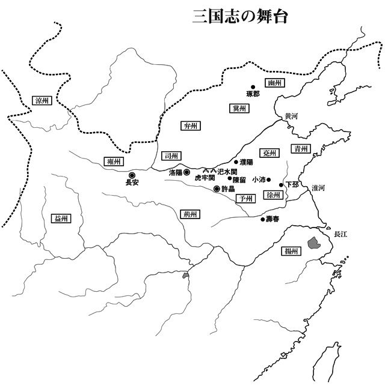

| 三国志２ 天上の舞姫 | |
| 小前亮 | |
| (2014) | |
人物紹介
劉備 あざなは 玄徳 。 漢 の 皇族 の血をひく 青年 。漢 王朝 の 復興 をめざしている。
関羽 あざなは 雲長 。劉備の 義弟 で、 美 しいひげの 偉丈夫 。 義 のために戦う。
張飛 あざなは 翼徳 。劉備の義弟で、ぎょろ目が 特徴 的な 巨漢 。 酒 と 戦 が大好き。
献帝 漢の 皇帝 。
董卓 漢王朝を 牛耳 る 悪漢 。
呂布 あざなは 奉先 。董卓の 護衛 。 古今 無双 の 豪傑 。
李儒 董卓の 参謀 。
王允 漢王朝の 大臣 。
貂蝉 王允の 養女 。 連環 の 計 を 実行 する。
曹操 あざなは 孟徳 。 諸侯 の一人。 乱世 の 奸雄 と 呼 ばれる。
夏侯惇 曹操軍の 将軍 。
夏侯淵 曹操軍の将軍。
曹洪 曹操軍の将軍。
曹仁 曹操軍の将軍。
荀彧 曹操軍の 軍師 。
郭嘉 曹操軍の軍師。
典韋 曹操の護衛。
許褚 曹操軍の将軍。
陳宮 呂布軍の軍師。
張遼 呂布軍の将軍。
陶謙 諸侯の一人。 徐州 を 拠点 とし、劉備たちを 客人 として 迎 える。
糜竺 陶謙の部下。
袁紹 諸侯の一人。 冀州 を拠点とする。
袁術 諸侯の一人。袁紹の弟。
公孫瓚 諸侯の一人。劉備の兄 弟子 。
趙雲 公孫瓚軍の将軍。

一章 連環 の 計
１
もの 悲 しい 鳴 き 声 が、 夕 焼 けの空にひびいている。 黒 い 羽 ばたきが、天をおおう。
都 の 長安 に、カラスが 増 えた。
お目当ては、 宮殿 から出る 大量 の 残飯 と、 広場 にさらされる 罪人 のしかばねである。
四百年つづいた 漢 王朝 に、 滅 びの 予感 がただよっていた。
最初 に漢の 政治 を 乱 したのは、 宦官 たちである。 彼 らは、 皇帝 の 側近 という 立場 を 利用 して 私腹 をこやし、 民 を 苦 しめていた。
地方 では、 黄巾 の 乱 という 反乱 が 起 こった。反乱といっても、 実態 は 山賊 と 変 わりがない。
この 討伐 に 活躍 した 若 い 将軍 たちが、宦官たちから 権力 をとりもどそうとこころみた。 袁紹 と 曹操 がその 中心 である。
ところが、 混乱 の 末 に、都の 新 しいあるじとなったのは、 董卓 という人の 皮 をかぶった 獣 であった。 悪行 のかぎりをつくす董卓に 対 し、袁紹と曹操は 諸侯 をあつめて 対抗 する。
袁紹ひきいる 連合軍 が 激闘 の 果 てに 虎牢関 を 落 とすと、董卓は都の 洛陽 を焼きはらい、長安に 逃亡 した。
しかし、諸侯の 不和 から、連合軍はここで 解散 し、 各地 に 散 った。袁紹、曹操、 孫堅 、 袁術 、 公孫瓚 といった諸侯は、 本拠地 をさだめて 独立 をはたしている。
そのような地方の 情勢 などおかまいなく、董卓は長安で 我 が 世 の 春 を 楽 しんでいた。
長安には 宮殿 がふたつある。
古 くから 残 るほうには、漢の皇帝である 献帝 がとじこめられていた。
献帝につきしたがっているのは、 皇后 と 身 の 回 りの 世話 をする 者 が 数人 だけで、その何百 倍 もの董卓の手下が、 見張 りについている。 衣服 や 食事 は、 庶民 と変わらない。
もうひとつの宮殿は、新しく 造 らせた董卓の 居城 である。
柱 は 朱 くぬられ、 屋根 には 金箔 がはられ、 壁 には 真珠 や 宝玉 がきらめいていて、 豪華 なことこのうえない。この宮殿には、都からさらってきた八百人の 美女 が 暮 らしていた。
董卓は 毎日 のように 宴会 をひらき、ぜいたくをつづけている。
少しでもさからうと 殺 されてしまうため、 誰 も 文句 は言わない。董卓のそばには、中国一の 猛将 である 呂布 がひかえているので、 反抗 できないのだ。
あるとき、董卓は 宴 の 席 に都につとめる役人をまねいた。
参加 した百人あまりが、董卓の 顔色 をうかがいながら 酒 を 飲 んでいると、一人の兵士がやってきて、呂布に 何事 か 報告 した。
「 承知 した。ご 苦労 」
呂布は席を立って董卓に 近 づき、耳もとでささやく。
「何と、そのようなことが。では、こうするがよい」
董卓の 指示 を 受 けた呂布は、 宴会場 をずんずんと歩いて、一人の 大臣 の前でとまった。 張温 という男である。
「ど、どうしたのですか」
張温は 真 っ 青 になって、ふるえだした。
「ついてこい」
呂布は 短 く 命 じたが、張温が 腰 をぬかしてしまったので、その 首 根 っこをつかんで 持 ちあげた。
ほかの役人たちが 固唾 をのんで見守るなか、呂布は張温を 連 れて外に出る。
しばらくすると、呂布は一人でもどってきた。ふたのついた 盆 を 両手 でささげもっている。呂布は董卓の前でふたをあけた。
役人たちの 悲鳴 がひびきわたる。
そこにあったのは、張温の 生首 であった。うらめしそうな顔で、 酒気 のただよう宴会場を見つめている。
「ご苦労だったな」
董卓は呂布に 杯 をあたえてさがらせた。
「張温は袁術に 謀反 をすすめられておったので、こうして 始末 させた。まあ、 当然 のむくいだな。おまえたちもわしにさからったらどうなるか、よくわかっただろう」
董卓は張温の首をわきにおいたまま、 平気 な顔で酒を飲みつづけた。
「さあ、 遠慮 するな。どんどん食べてくれ」
あつめられた役人たちはみな 黙 りこくり、 必死 の思いで 料理 を口に入れた。色とりどりの 贅沢 な料理はしかし、 灰 のような 味 がするのだった。
王允 は宴の 様子 を思いだして、 深 いため 息 をついた。
董卓に 仕 えるのはもうこりごりであった。 悪事 の 片棒 をかついでいると思うと、 吐 き 気 がしてくる。それに、いつ、何のきっかけで殺されるかわからない。
世のため人のため、そして何より自分のために、董卓を 討 ちたい気持ちがある。だが、呂布が守っている 以上 、手出しはできない。王允は五十 代 のなかばで、 政治家 としての 力量 は 評価 されていたが、 腕力 はからっきしだった。
かといって、諸侯と 通 じて 陰謀 をめぐらせれば、張温のような目にあう。長安を 脱出 するにしても、 一族 を 連 れてどこまで逃げられるかわからない。 八方 ふさがりで、出口はないように思われる。
「何か 方法 がないものか」
王允が 何度目 かのため息をついたとき、 背後 から声がかけられた。
「どうなさいましたの、お 父様 」
鈴 を 転 がしたような 美 しい声である。王允はゆっくりとふりむいた。
「何でもないよ、 貂蝉 。少し 仕事 のことで 悩 んでいただけだ」
貂蝉は王允の友人の子どもで、 今年 十六 歳 になる。友人は洛陽で董卓に殺されたので、王允が 養女 としてこっそりと 育 てていた。
「もしかして、董卓のことではございませんか」
王允はまじまじと貂蝉を見つめた。
長 いまつげが、 濡 れたような黒い 瞳 をふちどっている。 鼻 すじはすっきりと 通 って、ふっくらとした 紅 い 唇 のあいだから、白い歯がのぞいていた。はかなげな 細 い腰に、たおやかな 仕草 、あらためて見ると、貂蝉は男の目をひきつけて 離 さぬ美女である。うれいを 秘 めた 表情 がよく 似 あっていた。
王允が 無言 でいると、貂蝉は思いつめたように言った。
「 私 にできることは何でもおっしゃってください。お父様はみなしごの私を我が子のようにかわいがってくださいました。ご 恩 返 しがしとうございます」
王允は貂蝉に 歌 や 舞 をならわせており、貂蝉はそのどちらにもすばらしい 才能 をしめしていた。 平和 な世であれば、 将来性 のある将軍か大臣に 嫁 いで、 幸 せな 生活 を 送 ることができただろう。
「呂布という男が 部下 にいるから、董卓は思うがままにふるまっているのでしょう？ 二人を 仲 違 いさせればよろしいではありませんか」
「連環の計か......」
王允は 娘 が言わんとすることを 察 した。
貂蝉は美しいだけではない。かしこく、そして 勇気 ある娘だ。
「私ならできる。お父様もそうお思いでしょう？」
「いや、しかし......」
王允はためらった。
貂蝉は自分の 魅力 で董卓と呂布をとりこにし、二人を 争 わせようというのである。
「かわいい娘に、そんな 危険 なまねはさせられぬ」
「私は董卓が 憎 いのです。あの男に 復讐 できるのならば、この 身 がどうなろうと 悔 いはありません」
強 い 調子 で、貂蝉は言い切った。
その美しい姿を見て、王允は大きく息を吐きだした。
「わかった。そこまで言うのであれば、 計略 をさずけよう」
「はい、お父様」
貂蝉はあでやかにほほえんだ。
一変 したその表情は、王允に計略の 成功 を 信 じさせ、さらにつらい気持ちにさせたのだった。
２
王允は心を 鬼 にして、「連環の計」にとりかかった。
まず、 大金 をはたいて 豪華 な 冠 をつくらせ、呂布に 贈 った。呂布が 好 きな 金色 で、大きな 真珠 をはめこんだ 逸品 である。
呂布は 喜 び、お 礼 を言うために王允の 屋敷 にやってきた。 待 ちかまえていた王允は、とっておきの 美酒 と料理でもてなす。
「 将軍 のようなお 忙 しい 方 に、わざわざ足を 運 んでいただいて 申 し 訳 ございません。お口に合うかわかりませんが、どうか 召 し上がってください」
「これはかたじけない。 先日 の贈り物もすばらしかった。 朝廷 の大臣だけあって、さすがに王允 殿 は気が 利 くな」
「私が今の 地位 にあるのも、すべて董卓様と呂布様のおかげでございます。ご 恩 返 しをするのは 当然 です」
王允は呂布にお 世辞 を言ってもちあげ、しきりと酒をすすめた。おだてられた呂布は 機嫌 良 く笑いながら、 杯 をからにしていく。
呂布がほろ 酔 い 気分 になったところを 見計 らって、王允は貂蝉を呼んだ。
「おまえもこちらに来て、お 酌 をしなさい」
「はい、お父様」
しずしずとあらわれた貂蝉が、呂布のとなりにつく。
「ん、こちらは......」
ゆっくりと顔をあげた貂蝉を目にして、呂布は言葉を 失 った。 着 飾 った貂蝉の美しさに、思わず見とれてしまったのである。
「養女の貂蝉でございます」
貂蝉が酒をついでも、呂布はまだぼうっとしている。
「さ、いかがですか」
貂蝉がささやきかけると、呂布はびくっとして 我 に返り、あわてて酒を飲み 干 した。
「すまん。しかし、王允殿にこれほど美しい娘がいるとは知らなかった」
「もったいないお言葉でございます。では、 余興 をお見せしましょう」
王允は貂蝉に舞を 披露 するよう命じた。貂蝉は 着替 えのためにいったん 席 をはずす。その 後 ろ 姿 を 追 って、呂布の 視線 が動いた。
「この娘の 両親 はすでに 亡 くなってましてな。私が引き取って 育 てているのです。よい 縁談 を 世話 してやれれば 安心 なのですが」
「ああ、そうか」
呂布は 上 の 空 で答えてから、はっとして王允に顔を向けた。
「行き先は決まってないのか」
呂布は 愛人 をたくさんかかえているが、まだ 妻 はいない。王允はもったいぶってうなずいた。呂布の 反応 は 計画 通 りである。
「ええ、なかなかふさわしい方が見つかりません」
貂蝉がもどってきたので、 会話 は 中断 された。 笛 の 音 にあわせて、 優美 に舞いおどる貂蝉に、呂布の目は 釘 付 けになる。
曲 が 終 わると、貂蝉は一度だけ、呂布と目を合わせて 微笑 んだ。どんな男もひきつける 魔性 の笑みだった。
貂蝉が 去 ると、呂布はがばっと王允に 向 きなおった。思わず王允がのけぞるほどの 勢 いである。
「王允殿、 頼 みがある」
「何でございましょう」
「貂蝉を妻にしたい」
単刀直入 に、呂布は言った。王允はおどろいたふりをしながら、 内心 でよしよしとつぶやいた。 頭 の中で五つ数えてから、 返事 をする。
「ありがとうございます。将軍に 見初 めていただいて、こんなにうれしいことはありません。ただ、いろいろと 準備 がございますので、 一月 後 にまたお会いして、 具体的 な話をするということでいかがでしょうか」
「あ、ああ、そうだな。 承知 した」
呂布は顔を赤くしてうなずいた。 急 に 恥 ずかしくなったようだ。
「 突然 、言われても 困 るよな。すまなかった。では、一月後を楽しみにしている」
そそくさと王允の屋敷を後にする呂布であった。
それからというもの、王允は 積極的 に貂蝉を 人前 に出した。三日に一度は宴会をひらいて、 同僚 の前で貂蝉に舞わせ、何か 行事 があれば貂蝉を 同行 させた。
貂蝉の美しさはすぐに、 街中 の 評判 となった。いくつかの縁談も舞いこんできたが、すでに呂布の申し込みを受けていると 断 る。そうすると、相手は 無念 そうにあきらめる。ただ一人をのぞいて。
二十日ほど 経 ったある日、王允に董卓の宮殿から呼び出しがかかった。
「いよいよ来たか」
暗 い表情の王允に、貂蝉が笑いかける。
「計画はうまく行っているのです。もっと喜んでくださいな」
「あ、ああ」
王允はこれから董卓に仕えねばならない貂蝉のつらさを思うと、とても笑うことはできない。だが、今さら引き返すこともできないのである。
宮殿をたずねた王允に、董卓はせかせかと話しかけた。
「おお、王允か。実はな、おまえに若く美しい娘がいると聞いてな。悪いようにはしないから、一度ここに連れてこい」
王允は目を合わさないようにして応じる。
「かしこまりました。明日にでも 参上 させましょう」
翌日、董卓の宮殿におもむいた貂蝉は、そのまま帰ってこなかった。
董卓のそばに仕えることになったのである。
計画は 順調 に進んでいる。それでも、王允は 毎晩 、貂蝉を思って 涙 が止まらない。
夜も 眠 れずに貂蝉のことを考えているのは、呂布も 同様 である。
約束 の一月を前にしたある日、呂布は 血相 を 変 えて王允の屋敷をおとずれた。
「王允殿、どういうことだ。董卓様の宮殿で貂蝉を見たぞ」
「も、申し訳ございません」
演技 ではなく、王允はひたすらあやまった。呂布は 怒 り 心頭 に 発 しており、いますぐ 剣 を 抜 きかねない。
「董卓様が貂蝉のうわさを聞きつけまして、ぜひ 欲 しいとおっしゃったのです。 事情 を 説明 しても、ご 理解 いただけず......」
「もうよいわ」
呂布はいらだたしげにさえぎった。王允が董卓にさからえないことは、呂布もよくわかっている。だが、かといって、 簡単 に貂蝉をあきらめることはできない。
呂布は董卓の宮殿にとってかえした。 寝所 に 忍 びこんで、 裏庭 から様子をさぐる。
すると、 鏡 にむかって 黒髪 をとかしている女の姿があった。 眉間 にしわをよせ、口をかたくひきむすんで、世の 不幸 を 一身 に 背 負 ったような表情である。それでも、女の美しさはいささかもそこなわれていなかった。
「貂蝉......」
呂布は思わず身を乗りだした。鏡の向こうの貂蝉と目が合う。その一瞬、貂蝉はぱっと顔をかがやかせた。 蓮 の花が音をたてて 開 いたようだ。
しかし、貂蝉はすぐに目を 伏 せて、もとの表情にもどった。しなやかな 腕 がすうっと動いて、部屋のなかを 指 した。
かすかないびきが聞こえてくる。董卓がそこで 寝 ているのだ。呂布は貂蝉が言いたいことを理解した。董卓に自由をうばわれて、話をすることもはばかられるのだろう。
呂布は 胸 が苦しくてはりさけそうだった。 純粋 な 恋心 と 激 しい 嫉妬 が 心中 でうずをまいて、あふれてきそうである。
貂蝉は手の 届 かないところに行ってしまった。そのことがよけいに 恋情 をつのらせる。だが、本当に手が届かないのか。呂布ともあろう男が、 愛 する女の苦しみを、 指 をくわえて見ているしかできないのか。
一方、董卓は貂蝉の魅力にすっかり 夢中 だった。宮殿から外に出ようとせず、一日中貂蝉をそばにおいて、ともに 過 ごしている。
呂布は董卓の護衛として、ついたての後ろに立っていなければならない。酒を飲みながら董卓が 下品 な 冗談 を言い、貂蝉が楽しそうに笑う。貂蝉が 澄 んだ声で歌をうたい、董卓が 粗野 な合いの手をいれる。
それらの声が、呂布の耳に 突 き 刺 さる。貂蝉の演技だとはわかっていても、いやそれゆえにせつなさが胸を 焦 がす。
呂布は自分の気持ちをもてあまし、 悶々 とした日々を送っていた。
３
貂蝉は月をながめてため息をついていた。まるで王允のくせがうつったようである。
「呂布さま......」
月に 映 るのは、呂布の 精悍 な顔だ。
手がふれただけで顔を赤らめるのも、うるんだ瞳で見つめるのも、 最初 はすべて演技だった。
だが、しだいに気持ちが変わってきた。董卓のそばにいると、護衛の呂布とたまに目が合う。董卓がにらむため、会話をかわすことはできない。呂布はただまっすぐに見つめてくるだけである。
その純粋で 飾 り 気 のない視線に、貂蝉の心は 溶 かされた。いくら 復讐 のためであっても、世の中のためであっても、董卓に仕えるのはつらい。この 状況 から 救 ってくれるのは呂布だけなのである。
貂蝉は呂布と目を合わせるのを心待ちにするようになっていた。しかし、それも長くはつづかなかった。二人のひそやかなやりとりに気づいた董卓が、呂布に 釘 をさしたのである。
「 奉先 よ、おまえ、わしの女に色目を使っておるのではなかろうな」
「いえ、そのようなことは」
「ならよい。わしも女を殺すようなことはしたくないからな」
董卓はあやしい 行動 をすれば、貂蝉を殺すと 脅 しているのである。呂布はこぶしをにぎりしめて、怒りを 隠 した。
それから、貂蝉は宮殿の 奥 にとどめられ、呂布と顔を合わせることはほとんどなくなった。計画は順調とは言えなくなった。呂布に 謀反 を起こさせるのが 目標 だが、会えなくてはそそのかすことができない。
貂蝉は呂布が 忍 んで来てくれる日を待つしかない。連環の計の実行者としても、一人の女としても。
そして、その日はついにおとずれた。
董卓が古い宮殿に出かけて献帝と会っているとき、呂布が抜けだしてきたのだ。
貂蝉は 裏庭 の 池 にかかる 橋 のうえにたたずんでいた。息せき切って 駆 けてくる呂布のすがたを見て、一瞬、顔をほころばせる。
呂布は赤い 欄干 の橋にたどりつくと、たくましい腕を広げて貂蝉を 抱 きしめた。
「呂布さま、お会いしとうございました」
呂布の胸にくちびるをつけて、貂蝉がささやく。
「おれもだ。ずっとこうして抱きしめたいと思っていた」
ややあって、貂蝉はゆっくりと体をはなした。
「もう、これで思いのこすことはありません」
欄干に手をかけ、 蓮 の花が 咲 く池に身を投げようとする。
「おい、何をするのだ」
呂布はあわてて貂蝉の 肩 をつかんだ。ふりかえった貂蝉の瞳には、涙があふれている。
「私は董卓によって 汚 されてしまいました。もう呂布さまの妻にはなれません。この世で 結 ばれることができないなら、せめてあの世で 一緒 になりたいと思います」
「ばかなことを言うものではない。この世でもあの世でも、おれの妻となるのはおまえしかいない」
呂布は貂蝉の 細 い体をそっと抱きあげて、橋の 中央 におろした。
「あまり長いあいだ 持 ち 場 をはなれると、また董卓様に 疑 われてしまう。いずれ何とか助けだすから、いましばらく 耐 えてくれ」
そう言って、呂布は歩きだそうとする。
「待って」
貂蝉の声は 鞭 のようにしなって、呂布をからめとった。
「どうしていますぐ助けてくれないのですか。そんなにあの人が 恐 ろしいのですか。私はこの世で一番強い人を好きになったのだと思っていました。それはまちがいだったのですね」
「そんなことはない！」
呂布は顔を赤くして 叫 んだが、内心では 困惑 していた。貂蝉を救いたい、 嫌 われたくないと思うが、どうしてよいかわからない。
董卓を殺せばよいのか。最近、董卓を 憎 みはじめているのは 確 かだが、董卓の力があってこそ、今の自分の地位がある。呂布には 政治 やら 権力 やらはまったくわからない。 誰 かが助けてくれるのだろうか。
貂蝉はしゃがみこんで、 嗚咽 をくりかえしている。呂布はとまどったまま、貂蝉を立たせ、ふたたび抱きしめた。
「おれを 信 じてくれ。近いうちに助けだすから、それまで待っているんだ」
「もう待てません。このままどこかに 連 れて行って」
「このまま？」
貂蝉の 髪 をなでる呂布の手がとまった。
計画を成功させるための駆け引きであっても、貂蝉は同じ言葉を発しただろう。しかしこのとき、貂蝉は本心から呂布に助けてもらいたいと思っており、それだけに 訴 えは 無視 できないひびきをともなっていた。
呂布は決断をせまられた。 一騎 打 ちでは 退 くことのない 猛者 が、ためらいを 感 じていた。だが、貂蝉はうるんだ瞳で見あげてくる。
「じゃあ、 明日 にしよう。かならず 迎 えにくる」
「きっとですよ」
貂蝉は涙をぬぐって 念 を 押 した。
そのとき、貂蝉の 侍女 が声をあげた。 注意 をひきつけておいて、身ぶりで 門 のほうを指ししめす。董卓がもどってくるというのだ。
「では、明日」
呂布は身をひるがえして駆けだした。
貂蝉は立ちつくしたまま、その後ろ姿をずっと見つめていた。
董卓は呂布の 気配 がなくなって、急にそわそわしはじめた。
こっそり貂蝉と会っているのではないか。そう心配したのだ。
「どうかしたのか」
董卓の様子を見て、献帝がたずねた。目におびえの色がある。さからえば殺されると知っている幼い皇帝は、いつも董卓の顔色をうかがっているのだ。
「 急用 を思い出したので、これにて 失礼 します。 陛下 とちがって、わしは 忙 しゅうございますからな」
嫌味 を 残 して、董卓は席を立った。
どたどたと走って、馬がひく車に乗りこむ。
「ええい、急げ急げ」
董卓はせかしながら車を走らせて、宮殿に 着 いた。門を抜けると、そこで待ちかまえていた人物がいた。 参謀 役 の李儒である。
「董卓様、お待ちください」
「何だ、この忙しいときに」
董卓はいらだたしげに言ったが、いちおう立ち止まった。李儒の 進言 が 有用 であることは、董卓もみとめている。
「一人の女のために、身をほろぼすおつもりですか」
「どういう意味だ」
ぎくりとして、董卓は李儒をにらんだ。
「貂蝉などという女の 代 わりはいても、呂布の代わりはおりません。ほしがるなら、くれてしまえばよろしいでしょう。女はいくらでもいるではありませんか」
董卓はぎりぎりと 歯 をきしませた。李儒の進言は正しい。最近、呂布との間がぎくしゃくしている。貂蝉を与えて機嫌をとるべきだ。呂布にそむかれたら、誰が守ってくれるというのか。
しかし、董卓は思いきることができなかった。貂蝉が 惜 しいのだ。それに、呂布のわがままに 屈 するのも 腹 だたしい。
「それくらいはわしもわかっておる」
李儒は董卓の 迷 いを見てとり、さらに押した。
「では、私が貂蝉を呂布のもとへ連れて行きましょう」
「いや、もう少し待て。わしが 飽 きてから、くれてやろう」
歩きだした董卓に、李儒は追いすがった。
「お 考 え 直 しください。それでは 手遅 れになりかねません」
「くどい。おまえは自分の妻を 差 しだせと言われれば、差しだすのか」
董卓は貂蝉の名を呼びながら、 大股 で歩み去る。
李儒は口の中で主人をののしった。 迫 りくる 破滅 の 足音 が、李儒の耳には聞こえていたのである。
４
李儒の進言はつっぱねたものの、董卓の不安は消えなかった。
呂布と貂蝉はよく目を合わせて微笑んでいた。抱き合っていたという 証言 もある。まさかとは思うが、二人が 組 んで反乱を起こすことも 考 えられるのだ。
その夜、董卓は貂蝉の 意思 をたずねてみた。人の気持ちなど考えない董卓が、である。 迷 いの 深 さがうかがえる。
「呂布がおまえをほしがっておる。呂布のところへ行きたいか？」
貂蝉はおどろいて、持っていた 酒瓶 をとりおとしそうになった。 動揺 をおさえて、董卓の杯に酒をそそぐ。
ここで 素直 にうなずけば、これ以上、危険にさらされることもなく、呂布と 結婚 できるかもしれない。一瞬、心がゆれた。
だが、それでは連環の計が失敗に終わってしまう。董卓と呂布を仲違いさせて、呂布に謀反を起こさせなければならないのだ。
それに、貂蝉は呂布がきっと助けにきてくれるはずと信じていた。だから、 決然 として、顔をあげた。
「嫌ですわ。せっかく董卓さまのおそばに仕えることができて喜んでいたのに、どうしてあんな 野蛮人 に与えるなどとおっしゃるのですか。死んだほうがましです」
一息 に言うと、董卓は首をかしげた。
「しかし、おまえは呂布と抱きあっていたというではないか」
「それは 無理 矢理 抱きしめられたのです。女の身で 振 り 払 うことはできません。吐き気がしましたわ」
眉 をひそめる貂蝉を抱き寄せて、董卓はにんまりと笑った。 悩 みはふっきれた。
「そうかそうか、やはりわしがよいか。ならば呂布などには 渡 さぬ。ずっとかわいがってやるからな」
本当に吐き気がするのは、今このときだ。貂蝉は思ったが、けんめいに 耐 えてお 酌 をつづける。
董卓はやがて目を 閉 じ、いびきをかきはじめた。 服 をはだけ、よだれをたらしたみにくい 巨体 を見て、貂蝉は思わず 短剣 を手にとった。だが、細い腕で短剣を突き刺したところで、 分厚 い 脂肪 にはばまれるだけだろう。
やはり呂布にゆだねるしかない。貂蝉はため息をついて、短剣をおろした。明日が 待 ち 遠 しかった。
そのころ、呂布は王允の屋敷をたずねていた。
貂蝉のことで 秘密 の相談があると言われ、王允は呂布の 意図 を 察 した。連環の計は 最後 の 段階 をむかえようとしている。
「貂蝉を董卓から取り返したい。 知恵 を 貸 してくれないか」
王允は目をみはって、わざとおどろいた表情をつくった。 沈黙 を十ほどかぞえてから、しぼりだすように問う。
「......将軍には 覚悟 がおありですか」
董卓にさからえるか、という意味である。呂布はうなずいたが、一瞬、目が泳いだ。
「うむ。董卓を殺すのは 簡単 だ。だが、二度も 主君 を殺していいものだろうか。それに、その後の政治やら何やらがおれにはわからぬ」
「それならばご心配は無用です」
王允は声をひそめて言った。
「董卓は皇帝陛下をないがしろにしており、 恨 んでいる者がたくさんおります。陛下のご命令を受けて、董卓を 罰 するというかたちをとれば、将軍は 英雄 としてたたえられることになるでしょう。将軍は董卓の部下ではなく、漢王朝の 家臣 であります。政治も漢王朝のやり方にもどせばよいのです」
「皇帝がそんなに 重要 か。まだ声変わりもしてない少年ではないか」
呂布は首をひねったが、やがて考えるのをやめた。
「そのあたりのことは任せてよいか」
「もちろんでございます」
王允はあらかじめ計画を立てていた。後は 実行 するのみである。
「将軍には部隊の指揮をお願いいたします。計画の 内容 ですが......」
王允の説明を聞いて、呂布は安心したようだった。話があまりにとんとん 拍子 に進むことに対して、 疑 いをもつことはなかった。
翌日 、董卓は献帝から呼び出しを受けた。皇帝の地位をゆずる件について相談したいという。これは王朝の交代を 意味 するので、簡単にできることではない。
「ほう。まだ先のことだと思っていたが、向こうから言ってきたとあっては、考えないわけには行くまい」
董卓は喜んで出かけようとしたが、 参謀 の李儒が反対した。
「急にそのような話が出てくるのは 奇妙 です。何か 陰謀 があるかもしれません。よく調べてからにしたほうがよろしいかと思います」
だが、董卓は聞く耳をもたない。
「呂布がいるかぎり、陰謀など 怖 くないわ。さからうやつは 返 り 討 ちにしてくれる」
「しかし、その呂布殿がそむいたらどうします」
「 縁起 でもないことを言うな」
貂蝉が 支持 してくれたので、董卓は気が大きくなっている。呂布に対しては、金銀か 別 の女をあたえて機嫌をとればよいと考えていた。
董卓は車を用意させ、呂布をつれて献帝の宮殿へと向かった。
異変 は門を抜けて宮殿に入ったところで起きた。左右にひそんでいた 伏兵 があらわれ、董卓の車にむけて 弓 をかまえたのだ。
「漢朝にそむく 逆賊 め。陛下のご命令により、ここに 成敗 する。今日がきさまの 命日 だ。覚悟しろ！」
王允が 叫 んだ。 緊張 のあまり声がかすれている。
「 何事 だ」
董卓は車のなかから顔をだし、のんびりとした声でたずねた。 御者 があわてふためいて答える。
「む、謀反でございます。どこからともなく、兵士たちがあらわれました」
董卓は鼻で笑って、顔をひっこめた。
「呂布はどこにいる。あのばかどもを 始末 せい」
「ここにおります」
呂布はそう言いながら、車の中に手をつっこんで董卓をひきずりおろした。車が大きくゆれて、董卓の巨体が 転 がり出る。
「な、何をする !? 」
「きさまを殺すのだ」
呂布は冷たく答えると、 方天 画戟 をふりおろした。
重 い音がして、董卓の頭と体は、 永遠 に別れることとなった。 不当 に権力をうばって、悪行をくりかえした男の 最期 である。
呂布は董卓の首が転がるのを確認すると、すぐにきびすをかえした。
「後は任せたぞ」
王允に言いおき、董卓の宮殿にむかって走る。
貂蝉は昨日と同じ橋の上で、思い人を待っていた。きっと来てくれると信じていても、胸の 高 鳴 りがおさまらない。
眼下 の池には白や 桃色 の蓮の花がゆれている。 水上 に顔を出して花を開くことができたら、どんなに 心地 がよいだろう。
池に 映 った顔をながめながら、貂蝉はため息をつく。 鯉 がはねてさざ 波 がたち、 水面 の顔がくずれる。
そのとき、貂蝉の耳はかすかな呼び声をとらえた。顔をあげたときには、すでに涙がこぼれている。かすんだ視線の先に、たくましい男の影があった。
「呂布さま！」
貂蝉は 裾 をたぐりあげ、小走りに駆けた。呂布の姿が大きくなってくる。
「貂蝉！」
花 咲 きほこる庭園を 背景 に、二人はひしと抱き合った。そして、二度とはなれることはないと 誓 ったのである。
同じころ、王允は養女の気持ちを知ることはなく、 事後 処理 に 奮闘 していた。
董卓の死体は長安の広場にさらされた。董卓に苦しめられた人々が次々におとずれ、死体を 蹴 ったり、つばを吐いたりしていく。誰かが火をつけたが、 脂 ぎった董卓の死体はよく 燃 え、 三日 三晩 にわたって、火が消えることはなかったという。
王允はまた、董卓の 知恵袋 であった李儒をとらえるよう命じた。李儒は 変装 して逃げだそうしていたが、 城門 を 警備 する兵に見つかってつかまった。
「董卓の 愚 か 者 め。私の進言をきかないから、こうなったのだ。本当にばかなやつだ」
李儒は 恨 み 言 をくりかえしながら、 処刑 された。
王允はほかにも、董卓の下で 甘 い 汁 を 吸 っていた者たちを殺したので、 反発 が起こった。董卓の部下だった武将たちが兵をひきいて長安を 脱出 し、 陣 をしいて 対決 の 姿勢 をしめしたのである。
彼らは主張した。
「呂布は女におぼれて自分を見失った。おそれることはない」
「は、早く呂布殿に伝えるのだ」
王允はこの 事態 を 予想 していなかった。呂布を 味方 にして董卓を殺せば、すべて 丸 くおさまると思っていたのだ。
董卓が燃えつきても、長安の 混乱 がおさまることはなかった。
初平 三年（ 西暦 一九二年）の 出来事 である。
二章 徐州 の 風雲
１
昨日 までの味方が、今日は敵である。
虎牢関 でともに 董卓 軍と 戦 った連合軍の諸侯は、それぞれの 領地 で 勝手 に 独立 し、 互 いに 争 うようになっていた。
幽州 の 公孫瓚 、 冀州 の 袁紹 、 寿春 の 袁術 、 長沙 の 孫堅 といった 面々 である。
連合軍の中心的役割をになっていた 曹操 は、 兗州 の 陳留 を 本拠 に兵をあげた。とはいえ、曹操軍は虎牢関で 呂布 にこっぴどくやられたせいで 手勢 がすくない。曹操は 黄巾賊 の 残党 を 退治 し、 彼 らを 自軍 に組み入れることによって、その問題を 解決 した。
さらに、曹操は 陣営 を 強化 しようと、 大々的 に 人材 を 募集 した。 頭 のいい者、力の強い者を 立候補 、あるいは 推薦 させて、次々と 配下 にくわえたのである。
まず、 荀彧 という者がやってきた。一時は袁紹に仕えていたが、英雄の 器 ではないとみかぎり、曹操軍の門をたたいたという。
曹操はたずねた。
「袁紹を 捨 てたのはなぜだ」
「あのお 方 は、 家柄 にこだわって、人の 本質 を見ないところがおありでした」
荀彧は 短 く答えた。 旧主 の 悪口 をあまり言いたくないようでもあった。
「では、私が袁紹よりすぐれているのはどの点か」
「おそれながら、それをこれから 見 定 めようと思います」
「ふむ、私が 試験 されるわけか」
曹操は 満足 げに笑った。それからいくつか 質問 し、荀彧が 史書 や 兵書 に 通 じていることがわかったので、 軍師 役として 登用 した。最後に、荀彧は言った。
「私は 全力 で曹操様をお助けしますが、それはあくまで漢王朝の 臣 としてです。どうか一日も早く、皇帝陛下をお救いし、政治を正しい 方向 にみちびいてくださるよう、お 願 い申し上げます」
曹操は 鋭 い視線を荀彧に向けた。
「あいわかった。しかし、その言い方からすると、さぞ袁紹には 嫌 われたであろうな」
荀彧は 微笑 して答えなかった。
次に、曹操は荀彧の推薦で、 郭嘉 という男をまねいた。郭嘉は陳留 付近 の 地形 を 調査 し、守るときにどこを 重点 にすべきか 提案 した。それが 的確 であったので、曹操は深く 信頼 し、 戦略 戦術 について相談するようになった。
そして、郭嘉がさらに次の 賢人 を 紹介 し、それがまた次の、という 具合 に、曹操は 芋 づる 式 に人材をあつめた。
武 の面では、 夏侯惇 が一人の 巨漢 をつれてきた。
「 典韋 という者です。近くの山で 狩 りをしていたとき、この者が 素手 で 虎 と戦っているのを見まして、 配下 に 加 えました。命令をよく聞き、 先日 の 賊 との戦いでも 活躍 してます。なかなかの 逸材 ですよ」
夏侯惇は典韋をうながして礼をさせた。典韋は口のなかでもごもごと話した。自己紹介のつもりらしい。どうも 緊張 しているようだ。
曹操は典韋をじっと 観察 した。 無骨 な 印象 の 大男 で、 全身 が 筋肉 のよろいにつつまれている。 髪 とひげがぼさぼさで、 一見 すると山賊かと 勘違 いしそうだが、小さな目には 純朴 そうな光がやどっている。
「虎牢関のこともありますので、 孟徳 様には 優秀 な護衛が必要だと思うんです。おれが守れればいいんですけど、そうはいきませんから、こいつを代わりにいかがでしょう」
孟徳というのは、曹操のあざなである。あざなは 成長 してからつける 別名 で、 親 しい者はあざなで呼び合う。
虎牢関では、曹操は呂布に追いまわされて 危機 におちいった。そのときは 曹洪 の 決死 の 体 当 たりによって救われたが、二度と同じ目にはあいたくない。
曹操はにやりと笑って夏侯惇にたずねた。
「おぬしより強いのか」
「 腕力 はおれよりありますよ」
夏侯惇の 返答 はすなおではない。
曹操は典韋に向きなおった。
「では、その 自慢 の力をみせてもらおう」
曹操は兵の 訓練場 におもむき、一本の 旗 を指ししめした。 本陣 の 目印 となる 巨大 な旗で、 屈強 な兵士が三人がかりで持ちあげるものだ。
典韋は 無言 でうなずくと、旗さおのわきにかがみこんだ。大声で気合いをいれ、左手一本で持ちあげて立てる。おりから 強風 が 吹 いて、旗に 描 かれた 曹 の字がゆれたが、典韋は 微動 だにしない。
夏侯惇が典韋の 戟 を 放 り 投 げた。典韋は右手で受けとり、左手で旗を 支 えたまま、 縦横 に戟をふるった。
「すばらしい 怪力 だ」
曹操は手をたたいて 褒 めちぎり、 錦 の服とよろいを典韋に 贈 った。これで、曹操の護衛役が決まったのである。
その他にも何人か、 腕 に 覚 えのある 武将 が曹操のもとに 馳 せさんじてきた。
こうした 知将 、 猛将 たちは二十代から三十代で、いずれも若い。曹操は、家柄や 名声 よりも 能力 を 重視 して人を 用 いる。その 方針 が伝わったため、自分の頭や腕に自信のある若者が 集 まったのであった。
何より、曹操 自身 がまだ三十代 半 ばである。曹操軍には勢いがあった。
「私たちが 時代 を変えるのだ」
曹操はそう思っているが、 表 向 きは漢王朝を 大事 にする態度をくずしていない。配下にも荀彧のような考え方をする者がいるからだった。
さて、陣営をかためた曹操は、 田舎 に 避難 していた親に 手紙 を送り、本拠地に呼び寄せようとした。そこで、ある事件が起こる。
曹操の父親が陳留にむかって旅をしている 途中 、 徐州 で山賊に襲われたのだ。徐州をおさめる 陶謙 の軍に護衛をたのんでいたのにもかかわらず、である。曹操の父親は殺され、 財産 はすべて 奪 われてしまった。
「父上が !? 」
報告を聞いた曹操は 激怒 した。
「陶謙も徐州のやつらも決して許さぬ。 皆殺 しにしてやる！」
陶謙からは、すぐに 謝罪 の使者が来た。護衛部隊をひきいる男が、 大金 に目がくらんで山賊に 寝返 ったせいだという。
だが、曹操の怒りはおさまらない。
「そんな男を護衛にした陶謙が悪い。 責任 はとってもらう」
曹操は部下を集めて戦の準備を命じた。 突然 、 嵐 が 吹 き 荒 れたようであった。
２
徐州の 長官 である陶謙は、すでに六十歳をこえており、若いころにくらべて 性格 がすっかりおだやかになったと 評判 であった。黄巾賊に対しては、みずから軍をひきいて討伐したが、反董卓の連合軍には病気のために参加していない。
曹操が攻めてくると聞いて、陶謙はふるえあがった。徐州の兵力では、曹操軍に対抗できるとは思えない。だが、 側近 の 糜竺 は落ちついていた。
「こういうときのために、 客将 に 滞在 してもらっているのです。あの方たちの力を 借 りましょう」
「そ、そうだな。たしか、彼らは曹操とも 親交 があったはずだ。まずは 戦 を 回避 するために、 使者 にたってもらおう」
糜竺はさっそく、三人の客将のもとをおとずれた。
義兄弟 である彼らは、名を 劉備 、 関羽 、 張飛 という。
長兄 の劉備、あざな 玄徳 は、 皇族 の劉氏の 子孫 である。 貧 しい生活から身を起こし、黄巾賊の討伐で名をあげた。 腐敗 した 朝廷 や諸侯の権力争いと 距離 をおいているため、いくら 手柄 をたてても 出世 できないでいる。
次兄 の関羽、あざな 雲長 は、美しいあごひげの 偉丈夫 である。 青龍 偃月刀 の使い手で、 汜水関 では敵の大将・ 華雄 を 一刀 のもとに 斬 りすてた。
末弟 の張飛、あざな 翼徳 は、ほおひげとぎょろ目が 特徴 的 な 好漢 だ。 短気 でけんかっ 早 いが、呂布と戦っても一歩も 退 かぬ 勇気 と 胆力 の持ちぬしである。武器は 蛇 のように 穂先 がねじれた 矛 を使う。
劉備たち三人は、虎牢関で呂布を足止めする 大功 をあげた。連合軍の 解散 にともなって、行くところがなくなったが、陶謙に 誘 ってもらったので、徐州に身を 寄 せることにした。陶謙が 民 にやさしい政治を行っていると聞いたからでもある。
評判通り、徐州は 安定 していた。税は高くなく、 刑罰 は 公平 で、わいろが 横行 することもない。当たり前のことなのだが、 大 部分 の 地域 では、その当たり前のことがなされていないのだ。
徐州の民は安心して 農業 や 商業 に 精 を出していた。 比較 的 豊 かになった 結果 、ほかの州から 盗賊 がおそってくることもあったが、そういうときのために劉備たちがいる。陶謙の軍に 協力 して賊を退治するうちに、劉備も民にしたわれるようになった。
劉備はここで、陶謙のすすめで結婚することにした。相手は徐州の 名家 である 甘家 の 娘 である。中国は結婚しても 姓 は変わらないので、劉備の 妻 は 甘 夫人 と呼ばれるようになる。見合い結婚ではあったが、 夫婦 仲 はよく、二人は幸せだった。
劉備たちは、徐州の中心 都市 である 下邳 から西へ行った 小沛 という 城市 に住んでいた。西から攻められたときに 前線 基地 となる 場所 である。曹操が本当に 攻 めてきたら、まずはこの小沛が 戦場 になるだろう。
「曹操がなあ」
糜竺から 事情 を説明されると、劉備は 万感 の思いをこめてつぶやいた。
曹操には何度か会っており、ともに戦ったこともある。 大志 と 野心 をもち、頭の切れる男だという 印象 があった。
「使者の件、お 願 いできますでしょうか」
糜竺に頭をさげられて、劉備はすぐに承知した。
「曹操がみだりに兵を動かすとも思えぬ。今回の件は陶謙様に 非 があるわけではないから、 誠意 をもって話をすれば、きっとわかってくれるだろう」
「はたして、そう簡単にいきますかな？」
関羽は首をひねった。
「曹操は親の 復讐 という感情だけで動いているわけではありますまい。簡単に説得できるとも思えません。兄者の身に危険が迫るような 任務 は引き受けかねます」
使者としておもむいた劉備がそのまま 捕虜 になってしまうかもしれない。関羽はそう心配しているのである。
「 交渉 なんてまだるっこしいことしないで、攻めてくるんなら 迎 え 撃 てばいいじゃないか。おれたちは呂布にだって負けなかった。曹操など 恐 れるにたらん」
これはむろん、張飛の 主張 である。劉備たちは三人がかりで呂布に立ち向かい、 撃退 したのであった。あえて勝ったと言わないあたりに、張飛の 意地 と 誇 りがみえる。次にあったときは、一対一で勝つつもりなのだ。
「こちらに玄徳殿らがいらっしゃることがわかれば、曹操も考え 直 すかもしれません。 無用 な血を流さぬためにも、 一肌 脱 いでくださいませんか」
糜竺がかさねて 頼 むと、劉備はうなずいた。
「そう言われては 断 ることはできない。雲長、それでよいか」
「では、それがしがお供いたします」
「うむ。 一刻 も早く出発したほうがいいだろうな」
劉備と関羽は二人で話を進める。張飛があわてて口を出した。
「おれもつれていってくれよ」
「今回は 喧嘩 をしにくわけではないのだ。翼徳は 留守番 を頼む」
「一人で留守番？」
張飛は口をとがらせて文句を言ったが、兵を 指揮 する者が必要だと言われて、ようやくあきらめた。
劉備と関羽はその日のうちに準備をして、曹操の陣へと旅立った。
３
そのころ、曹操軍はすでに兗州を出発し、東へ向かっていた。 総勢 十万の大軍で、夏侯惇が 先鋒 をつとめ、夏侯淵、曹洪、典韋らの 武将 が 本隊 の曹操にしたがっている。陳留の守りは、曹仁と荀彧がかためていた。
曹操は、配下の将軍のうち、 一族 の夏侯惇と曹仁に深い信頼を寄せている。それゆえ、独立した部隊を任せるのである。逆に、夏侯淵と曹洪は、 手元 において 指示 を出してこそ、力を 発揮 できると考えている。もちろん、 今後 は 成長 して、 一軍 を任せられるようになってくれるだろう。
徐州の 境 を目前にしたある日、曹操の陣に劉備からの手紙が 届 いた。陶謙からの使者として交渉におとずれたのだという。いきなりたずねて 攻撃 されるのをおそれ、あらかじめ手紙で 意図 を知らせたのだった。
「ほほう、あの劉玄徳か」
曹操は手紙を読みながら、数年前の 記憶 をたどった。劉備たち義兄弟の活躍はよくおぼえている。関羽と張飛の 武勇 はもちろん、劉備という男の 独特 の 雰囲気 が印象にのこっていた。
高い地位も多い兵力もないのに、黄巾の乱でも虎牢関の戦いでも、人の 耳目 を集める 働 きを見せた。いずれ、 乱世 の 雄 として 台頭 してくるかもしれない。早めにたたきつぶすか、味方にするか考えなければならないだろう。
もっとも、この状況では、劉備と話すことは何もない。曹操は陶謙と徐州の人々に対する怒りから兵を出した。だが、いまは気持ちを切り 替 えている。この戦は徐州を 奪 い、勢力を広げるためのものだ。新しい戦力も 試 してみたい。
つまり、劉備がいくら説得しようと退く 意思 はなかったのだ。それでも、曹操は郭嘉を呼んで相談した。
郭嘉にかぎらず、曹操は部下の 意見 をよくたずねる。自分の考えが正しいかどうか 確 かめるだけでなく、部下を試す意味もある。 的 を 射 た意見を言える者は 重 くもちい、そうでない者は簡単な仕事しか与えない。そうすれば、郭嘉や荀彧のような才能ある者が 周 りに集まり、道をあやまることがなくなるのだ。
「そういうお考えでしたら、私に 策 があります」
郭嘉は曹操に近づき、なにやら耳打ちした。曹操は大きくうなずき、夏侯淵を呼びだした。本隊の進軍をとめ、劉備をむかえる準備をするよう命じる。
「郭嘉の 智謀 は私の上をいくな。おぬしが味方でよかった。今後とも 助言 してくれるとありがたい」
「もったいないお言葉でございます。では、ひとつお願いをしてもよろしいでしょうか」
郭嘉が 姿勢 をととのえる。曹操は 手 振 りで先をうながした。
「曹操様は徐州の者は兵も民も殺すよう命令を出されました。これは 撤回 していただきたいと思います」
「復讐ではなく、 領土 拡大 が目的だからか」
「おっしゃるとおりです」
無人 の地を領土にしても仕方がない。 将来 の 領民 に憎まれるような 行為 はつつしむべきだと、郭嘉は言う。 正論 だ。
だが、曹操の反応は 予想 とはことなった。
「考えておこう」
「それでは間に合いません。すぐに先鋒部隊にご命令ください」
「いや、ひとつふたつの 街 は 滅 ぼしてよい」
「な......」
郭嘉は 絶句 した。曹操の視線が、 刃 のごとく 鋭 い。
「もちろん、非をみとめて許しを 請 う者は 別 だ。だが、私に 敵対 したらどうなるか、 世間 に知らしめる 必要 があるのでな」
「しかし......」
「 我 が行くは 覇道 。 出自 や 血統 にたよらず、知恵と力で切りひらく道だ。 流血 をためらっていては、前に進むことはできぬ。おぬしも 覚悟 しておいてもらいたい」
郭嘉はうつむいて何度かくちびるをふるわせていたが、やがてすっと顔をあげた。
「承知しました。曹操様について行きます」
「これからの働きも期待しているぞ」
曹操は満足そうに言った。
郭嘉は曹操の考えにすべて 賛同 したわけではない。だが、その 器量 と自信と、 気宇 の 壮大 さに 衝撃 を受けた。新しい時代を 創 るのは、曹操のような人物にちがいない。曹操に才をみとめられ、そのもとで力を発揮するのは、 何物 にも 替 えがたい喜びだと思えるのであった。
曹操は 陣中 とは思えない 豪華 な料理と酒で、劉備と関羽をもてなした。ただ、曹操本人は顔を出さず、郭嘉が代わりに応対した。
「申し訳ございません。曹操様は途中で病気にかかって、 到着 が 遅 れております。三日のうちには 着 くはずですので、それまでゆるりとお待ちください」
劉備は顔をしかめた。
「ゆっくりしているひまはない。早く曹操殿にお会いして、戦をとめてもらわねばならぬのだ」
「そう言われましても、私たちも 主君 の指示なしでは動けないものですから、どうしようもありません」
いったん帰って出直すべきかと思ったが、小沛と 往復 すれば三日以上はかかるし、その間に 進軍 されても 困 る。かといって、ここで待っていろというのを、ふりきって前進するわけにもいかない。
劉備は仕方なく、曹操の到着を待った。きっちり三日後、ようやく曹操が顔を見せた。
「待たせてすまなかった。それにしても久しぶりだな。虎牢関でともに戦ったときは、このようなかたちで再会するとは思わなかった」
劉備は 世間 話 や思い出話に 興 じるつもりはなかった。
「このたびはお願いがあって参りました」
曹操が 苦笑 する。
「 内容 はわかっている。だが、かなえてやるわけにはいかぬ」
「 筋 のとおらぬ 恨 みでみだりに戦をしかけるのは、 武 を 汚 す行為です。つみあげた 名声 が地に落ちますぞ」
劉備は正面から斬りこんだが、曹操の心は動かない。
「親を殺されて手をこまねいていては、 不孝 のそしりを受けるであろう。 仇 討 ちは子のつとめである」
「仇討ちであれば、犯人を 探 してつかまえればいいでしょう」
「それは陶謙がすべきことではないかな。犯人は陶謙の部下で、陶謙が父の護衛に 差 し向けた男だ。犯人を差しだすことができなければ、陶謙の 責任 を 問 うのが当然だと思わないか」
劉備は言葉につまった。曹操の父をおそった犯人の行方は知れない。袁紹か袁術のもとに逃げたのではないかと思われているが、探している時間はなかった。
「陶謙が犯人をかくまっているかもしれぬ。 否定 する 証拠 はあるか」
「陶謙様はそのような方ではありません」
劉備は言ったが、それでは証拠にならない。別な方向から説得する必要を感じた。
「戦になれば民が苦しみます。英雄たる者は 下々 の幸せを考えるべきではありませんか」
「英雄とは 光栄 だな」
曹操は微笑した。
「私も民の幸せを願っている。だが、私にとって民とは私にしたがう者たちのことだ。武器をとって 抵抗 するのであれば、民も兵も変わらぬ。私の進む道に立ちふさがるのなら、 排除 するだけのことだ」
劉備は曹操をにらんだ。視線でその考えを否定するかのように。
「では、どうあっても兵を 収 めていただけないのですね」
曹操は 余裕 たっぷりにうなずいた。
「 残念 ながらな。 貴公 と話ができて楽しかった。次は戦場でお会いしよう」
軽くあしらわれたかたちとなった劉備は、 肩 をふるわせながら退出した。 決 して 危害 をくわえないよう、曹操が配下の者に命じる。
郭嘉が曹操にたずねた。
「曹操様は劉備たちを味方にしたいのではないか、と思っておりました」
「その気持ちはある」
曹操は劉備との会話を思い起こしながら答えた。
「だが、今の時点で 誘 ってもよい返事は 得 られないだろう。いずれ機会があるはずだ」
一方、劉備は 暗 い表情で馬にゆられていた。交渉がうまくいかなかったせいもあるが、それ以上に落ちこんでいた。関羽が声をかける。
「戦って追い返すしかありませんな。翼徳は喜ぶでしょう」
「ああ、仕方ない。だが、曹操は恐ろしい男だ。董卓などよりずっと、漢王朝にとって害になるのではないか」
劉備はつぶやいた。
このときはまだ、曹操と郭嘉にしてやられたことに気づいていなかった。
４
下邳の 城下 は、曹操軍の旗でうめつくされていた。夏侯惇ひきいる先鋒部隊が、城を攻めたてている。
陶謙は城壁の上に立って、みずから 防衛 戦 の指揮をとっていた。 弓兵 をならべ、 一斉 射撃 で敵を遠ざけている。
「しかし、こんなに早く敵がくるとは思わなかったな」
陶謙のつぶやきに、糜竺が答える。
「申し訳ございません。私も予測できませんでした」
曹操は本隊をあえてゆっくりすすめて陶謙を 油断 させ、その間に、先鋒部隊が下邳を 急襲 する 作戦 をとっていた。
先鋒部隊は前線基地の小沛を通らず、遠回りして徐州に攻めこんだ。抵抗しようとした街の人々を 皆 殺 しにしたため、徐州の民はふるえあがり、次々と曹操軍に 降伏 する。そして、 妨害 がなくなったところで、 一直線 に下邳をめざし、おどろくべき 速 さで城下に 達 したのだ。
陶謙は幽州の公孫瓚に 援軍 をたのんでいたが、まだ返事はきていない。小沛には二万の兵がいたが、もはや 連絡 はとれなかった。
「劉玄徳は 無事 だろうか」
「いまごろ、小沛の兵をひきいてこちらに向かっているでしょう。あと三日ももちこたえれば、きっと援軍がきます」
根拠 はなかったが、糜竺は 断言 した。 咳 きこみながら指揮をとる陶謙のすがたを見ていると、 希望 をうしなうようなことは言えない。
敵軍はおよそ三万。城内の 守備 兵 も同じ数だけいる。糜竺は戦に明るくないが、兵力からすれば 充分 に守りきれるはずだ。
しかし、城内には 兵糧 のそなえはあったが、矢や 投石 用 の石が不足していた。おまけに、敵はこれから本隊がやってくるのだ。援軍がこなければ、かなり 不利 な戦になるだろう。
陶謙がまたはげしく 咳 をした。体を 折 り 曲 げて、苦しそうにあえぐ。
「陶謙様。ここは部下にまかせて、中に入りましょう。お体にさわります」
糜竺は陶謙をささえ、城壁の階段をおりようとする。
そのとき、背後で歓声があがった。
「味方だ。援軍がやってきたぞ！」
おどろいてふりむくと、西からやってきた 軍勢 が、曹操軍におそいかかるのが見えた。劉と書かれた旗が遠くでひるがえっている。
「まさか、劉玄徳殿がもう来てくれたのか」
糜竺はやつれた顔に 笑 みを浮かべた。これで、何とか戦えそうだ。
実はこのとき、劉備と関羽はまだ到着していなかった。張飛が 単独 で小沛の兵をひきいてきたのだ。
曹操軍の先鋒部隊が徐州に攻め入ったと聞いて、留守番をしていた張飛はなやんだ。勝手に兵を動かしたら、劉備に 怒 られるかもしれない。
だが、それもつかの間のこと。
「味方が攻められているというのに、この張飛様が 黙 っているわけにはいかん」
張飛は小沛の兵をすべて連れて下邳へ 急行 した。それで、 危機 に間に合ったのである。
「誰か、張飛様の相手になるやつはいないか！」
張飛は 叫 びながら、敵陣に突っこんだ。
曹操軍からは、夏侯惇の 副将 をつとめる 于禁 が前に出てきた。 銀色 に光る 槍 をしごいて、突きかかってくる。
張飛の 蛇矛 と于禁の槍が空中ですれちがい、たがいの胸をねらって 伸 びた。 両者 はともに 寸前 でかわし、 馬首 をめぐらして、ふたたびぶつかる。
三合目に、張飛の蛇矛が于禁の 脇腹 をとらえた。穂先がよろいにひっかかり、于禁は馬からひっこぬかれて 宙 づりになった。
「うわっ。おろせ、この 野郎 」
于禁があばれると、よろいのひもが切れて地に落ちた。 腰 を打ってうめき声をあげる于禁を部下たちが助けに走る。
それを 尻目 に、張飛は 突撃 していた。蛇矛をふるって敵兵をけちらし、曹操軍の 奥 深 くへ攻めいる。その後から、小沛の軍団が槍をならべてつづく。
「大将はどこだ !? 」
張飛はわめくが、夏侯惇は姿を見せない。張飛は 軍旗 がたくさん立っているところを本陣と見定め、そこをめざして馬をすすめる。
「おらおら、張飛様のお通りだぞ！」
調子 よく攻めこんでいた張飛だが、ふと 妙 なことに気づいた。いつまで立っても旗に近づけず、前方には敵がたくさんいる。それどころか、四方八方どこを見回しても、敵だらけなのである。
張飛の部隊は、いつのまにかすっかり 包囲 されていた。
曹操軍は小沛の部隊が助けにくることを予想しており、あらかじめ作戦をたてていたのだ。張飛が突撃してきたら、陣形を 変化 させて 包囲 網 に誘いこむてはずだった。
作戦を考えたのは郭嘉だが、 完璧 に 実行 した夏侯惇の 手腕 も 見事 だ。
「敵は 袋 のねずみだ。 一気 におしつぶせ！」
夏侯惇の 激励 にこたえて、曹操軍が外から攻めたてる。
張飛は血に 染 まった蛇矛をふりまわして戦ったが、 単独 では状況を変えられない。包囲された兵は、一人また一人と倒れていく。
その様子は、城壁の上からもよく見えていた。陶謙も糜竺も、助けに行かなければならないことはわかっている。だが、城門を開けて兵を出せば、敵が城内に 侵入 してくるかもしれない。そう思うと、 判断 がつかない。
「見殺しにするわけにはいきません。兵を出しましょう」
糜竺が言って、陶謙がうなずいたときである。
北方 から 一筋 の光が走った。
白馬 ぞろいの 騎兵 隊 があらわれ、曹操軍におそいかかったのだ。白馬部隊は、公孫瓚軍の 主力 として 名高 い。
「おお、公孫瓚殿からの援軍か」
陶謙はほっと息をついて、その拍子にまた咳きこんだ。
「我こそは 常山 の 趙雲 なり。いざ、 参 る！」
白銀 のよろいに身をかためた若者が叫んだ。これが公孫瓚配下の 勇将 で、常山出身の趙雲である。
趙雲は夏侯惇めがけて一直線に馬を 馳 せ、槍で突きかかった。
「む !? 」
夏侯惇は顔をのけぞらして槍をかわした。偃月刀をふるって、走り去る趙雲の背中をねらう。趙雲は体を低くして、偃月刀に 空 を切らせた。 弧 を 描 いて駆けもどり、ふたたび槍を突きだす。
神速 の突きは、寸前で偃月刀にはばまれた。お返しとばかりに、夏侯惇が手首をひねると、偃月刀が生き物のように動いて、趙雲の 頭上 をおそう。趙雲は馬ごと体をかたむけ、これをかわした。
趙雲の 速度 と夏侯惇の 技術 、どちらも 群 を抜いている。 互角 の戦いがつづくうちに、白い騎兵隊は外から包囲網を突きやぶった。
「ありがたい。天の助けか」
張飛は生き残っている兵を集め、この穴から 脱出 を 果 たした。趙雲と夏侯惇が戦っているのを見て、 加勢 しようと馬を寄せる。
「今日はここまでだな」
夏侯惇に二人を相手にする気はなかった。兵をまとめて 素早 く 退却 させる。趙雲に 追撃 する気はなく、張飛には気持ちはあっても 余力 がなかった。
張飛と趙雲は下邳の城内に入り、曹操軍は城からはなれて陣をしきなおした。
「みな、よく戦ってくれた」
夏侯惇は 負傷 した于禁をなぐさめ、配下の兵士たちの 頑張 りをほめたたえた。ここで勝負を決める必要はない。曹操の本隊が着くのを待ってから、あらためて攻撃すればよいのである。
張飛と趙雲の活躍で、下邳は 落城 をまぬがれたが、それも一時のことと思われた。
５
一方 、小沛にもどった劉備は、張飛がいないのでおどろき、事情を聞いて天をあおいだ。
「まんまとしてやられた。曹操は時間 稼 ぎをしていたんだ」
劉備は 悔 しがったが、ぐずぐずしている 暇 はない。
「下邳城と翼徳が心配です。急いで向かいましょう」
関羽が馬をひいてきた。それにまたがって、二人は下邳をめざす。
人馬 とも 疲 れはててたどりついたとき、下邳城はまだ落ちていなかった。夏侯惇は無理に攻撃しようとせず、城外で 待機 している。それで、劉備と関羽は妨害されることなく、城に入ることができた。
「おお、 兄貴 たち、無事だったのか」
張飛が 満面 の笑みで出迎えた。
「無事だったのか、ではないだろう。陶謙様から 借 りた兵を勝手に動かすとは何事だ」
劉備は厳しい顔で張飛をにらんだが、すぐに 緊張 をゆるめた。
「とはいえ、おまえのおかげで下邳は救われたそうだな。ありがとう。よくやってくれた」
「いや、それほどでもあるんだけどな」
調子に乗る張飛を、関羽がたしなめる。
「しかし、包囲されて 危 なかったらしいじゃないか。翼徳はもっと状況判断を学ばないといかんぞ」
劉備はつづいて趙雲に 挨拶 し、再会を喜んだ。
聞くと、公孫瓚は陶謙からの援軍 要請 を 無視 するつもりだったという。虎牢関の戦い 以来 、公孫瓚は袁紹と 激 しい領土あらそいをくりひろげており、とても余裕がないというのが理由だ。しかし、劉備たちは陶謙の 許 しをえて、公孫瓚の援軍に出かけたこともあるのだ。
「それで、今回、援軍を送らないのは 信義 に 反 すると考え、公孫瓚様を説得したのです」
趙雲は言った。公孫瓚はしぶしぶ 許可 をだしたが、五百騎の騎兵しか 貸 してくれなかった。たったそれだけで、趙雲は 戦況 を 逆転 させたのである。
「ありがとうございます。おかげで助かりました」
「礼には 及 びません。劉備様とともに曹操と戦えるのではあれば、どこからでも駆けつけます。曹操のやり方は許せませんから」
趙雲が言うのは、住民を皆殺しにした曹操の行為である。劉備も力強く 同意 した。
「私もそう思います。曹操の手から徐州を守らなければなりません」
だが、状況は 厳 しくなるばかりである。
それからしばらくして、曹操の本隊が下邳に到着した。がら 空 きになった小沛をふくめ、徐州の半ば以上を 支配 下 におさめて、 悠々 と 登場 したのである。
これで、曹操軍は 総勢 十万、下邳の守備兵は五万に 満 たない。陶謙は 周辺 の民をすべて城内に 避難 させたため、兵糧は長くもちそうにはなかった。矢も 急 いで作らせているが、 材料 もかぎられている。
曹操軍は下邳をすっかり 囲 んだ。あえて攻撃をしかけようとせず、 持久戦 のかまえをとっている。
「わしの命と 引 き 替 えに、矛を収めてもらうわけにはいかないだろうか」
陶謙は糜竺に相談したが、 望 む答えは返ってこなかった。
「曹操は徐州を丸ごと手に入れようとしているのです。聞く耳はもたないでしょう」
「では、民の安全を 条件 に、城を 明 け 渡 すしかないか」
劉備たち義兄弟三人と趙雲は、討って出て決戦しようと主張したが、陶謙はみとめなかった。勝っても負けても、 犠牲 が大きすぎるというのだ。
陶謙は民を 巻 きこんでの 防衛 戦はしたくないと、降伏の準備をはじめた。
しかし、救いの手は意外なかたちであらわれた。
ある日 突然 、曹操軍が退却をはじめたのである。何かから逃げるのではなく、 隊列 を組んで 整然 と西へ帰っていく。
「いったい、何が起こったのでしょうか」
糜竺はすぐに 偵察 隊 を出して、事情を調べさせた。
その結果、曹操の本拠である兗州が何者かに攻められているらしいことがわかった。曹操軍は徐州の 占領 地 を 捨 て、兗州に急行するかまえだという。
これを聞いて、劉備は主張した。
「すぐに追撃しましょう。背後をおそえば、曹操に 大 打撃 をあたえられます」
そうこなくちゃと、張飛が腕まくりする。関羽もうなずいて 賛成 の意見をしめした。
劉備は曹操が民を殺したことを怒っているのである。復讐せねばならない。
だが、陶謙は 出陣 を許さなかった。
「戦いになれば、無用な犠牲を出してしまう。それに、また何かわながしかけてあるかもしれぬ。今は曹操が捨てた地を 回復 するだけでよいだろう」
「......陶謙様がそうおっしゃるのでしたら、私はしたがいます」
劉備は 納得 がいかなかったが、客将の 立場 で、陶謙にさからって兵を出すことはできない。あきらめざるを 得 なかった。
包囲がとけたので、趙雲は公孫瓚のもとへ帰ることとなった。
「本心では劉備殿とともに戦いたいのですが、私は公孫瓚様の家臣でございます。主君を見捨てることはできません。ご 容赦 ください」
「わかっています。また機会があれば、同じ旗の下につどいましょう。それまでお元気で」
劉備たちは 郊外 まで馬を走らせて、趙雲を見送った。 後 ろ 髪 引かれる思いで、趙雲は北へ去っていった。
「私たちも小沛に戻るか」
「曹操軍に 荒 らされてなければよいのですが」
「敵が残っていれば、戦っていいんだよな」
劉備たちが話しながら城に帰ると、糜竺が 神妙 な顔で出迎えた。
「陶謙様が 重要 な話があるそうです」
「はて、何でしょうか」
劉備は 胸騒 ぎを感じ、糜竺の後について 内城 の奥へ急いだ。
陶謙は 寝台 の上に 横 たわっていたが、劉備を見ると 半身 を起こした。
「玄徳殿、頼みがある」
言うと同時に咳きこむ。劉備はあわてて近寄り、陶謙の背中をさすった。陶謙が苦しげにつづける。
「見ての通り、わしはもう長くはない。わしの後をついで、この徐州を 治 めてくれぬか」
劉備はおどろいて手をとめた。陶謙は徐州をゆずるというのである。
「何をおっしゃいますか。陶謙様にはまだ長生きしてもらわねば困ります。それに、陶謙様は漢の朝廷から徐州をまかされた身でありましょう。私が勝手に後をつぐなど、できるはずがありません」
「しかし、民にはよき君主が必要だ。玄徳殿はその 資格 をもっている。どうか、民のために引き受けてくださらんか」
劉備はとんでもないと首をふった。
「そんな 大任 は私にはつとまりません。他にふさわしい人がいるでしょう」
「徐州の民は劉備様を支配者にと望んでいるのです。私たち家臣も同じ気持ちです」
糜竺が言い 添 えたが、劉備は 頑 として首を 縦 にふらない。
「しばらく徐州をあずかるということにすれば、信義には反さないでしょう」
「何を 遠慮 しているんだ。くれるというんだから、もらっておけばいいじゃないか」
関羽と張飛がすすめると、劉備はきっとにらみつけた。
「おまえたちは、私に 不義 の道を行けというのか !? 」
陶謙がかぼそい声で 訴 える。
「玄徳殿が承知してくださらないと、安心して死ねないではないか」
しかし、劉備は 頑固 だった。
「その件は陶謙様のご 病気 が治ってから、あらためてお話ししましょう。私たちはこれまで通り、小沛で徐州を守ることにします」
張飛が関羽にささやく。
「まったく、劉の兄貴の 融通 がきかないのにも困ったものだ」
関羽も太い眉をひそめて困り顔である。
「仕方ない。それが兄者のよいところだろう。われらは信じてお仕えするだけだ」
こうして、劉備たち三人は小沛に 戻 ったのであった。
三章 人中 の 呂布
１
留守番役の 曹仁 から知らせを受けたとき、 曹操 は耳をうたがった。
「呂布が攻めてきただと？ あいつは 行方 しれずになっていたはずだぞ」
だが、それは 事実 だった。
呂布は 破竹 の勢いで進軍しており、曹仁らが 死守 する二、三の城をのぞいて、あっというまに奪いとったという。
「にわかには信じられないが、事情を調べるのは後だ。すぐに 兗州 にもどる。ただし、決して 隙 を見せぬように」
曹操の決断は早かった。 夏侯惇 をしんがりに残して、次々と 撤退 していく。 占領 した 徐州 の地にもこだわらなかった。また後で取りかえせばよい。
兗州に急行する 道中 、くわしい 情報 が入ってきた。曹操はあらためて、呂布の足取りを 確認 した。
それによると、呂布が 董卓 を 暗殺 してから、 長安 は大混乱におちいった。董卓の元部下たちは 仇 を討とうと兵をあげ、 王允 や呂布と争った。この戦いで呂布軍は 敗北 し、王允は殺され、呂布は長安を追われてしまう。
「そこまでは知っている。董卓の部下どもが呂布を 破 るとは 意外 であった」
戦術は、 虎牢関 で連合軍がとった策と似ている。旧董卓軍はわざと負けて呂布軍を誘い出し、その間にからになった長安を攻めたのだ。 貂蝉 を 人質 にとられた呂布は、やむなく長安を出て行くことに 同意 した。
この策を立て、実行した軍師を 賈詡 という。曹操はその名を 脳裏 に 刻 みこんでいた。のちの人材 収集 のためだ。
呂布が去った後の長安は、 無法 地帯 となった。董卓の部下たちは 仲間 割 れをしてたがいに争っているという。皇帝の身も 誰 の 保護下 にあるやらわからない。
「いずれ皇帝を救い出すために、長安へ 遠征 しなければならないな。それまで混乱がつづいてくれるとありがたい」
曹操は 宦官 や董卓と同じように、皇帝を利用することを考えていた。皇帝の 権威 とみずからの武力で、諸侯をしたがわせるのだ。
だが、今は呂布に集中するべきだった。
長安を追い出された呂布は、貂蝉とともに諸侯をたずねて歩いた。 袁術 には信用できないと 断 られ、 袁紹 には 一時 迎え入れられたが、 同僚 にねたまれて 追放 された。その後、ある諸侯の城をうばって独立し、守りの 薄 い兗州に攻めこんだという。
今、呂布は 陳留 を攻めており、曹仁と 荀彧 が 懸命 に防いでいる。
「城をうばって独立、私のいない兗州に攻めこんだ、か」
曹操は 眉間 にしわをよせて考えた。
「呂布らしくない。誰か、知恵のまわる者が味方についたか」
たずねて返ってきた名は、なつかしいひびきをともなっていた。
「 陳宮 、とな」
曹操が陳宮と出会ったのは、董卓の暗殺に 失敗 し、 洛陽 から脱出したときであった。町の役人だった陳宮は、おたずね者の曹操を見逃してくれ、しばらく連れだって旅をした。だが、 誤解 から人殺しをした事件で、曹操に 愛想 をつかし、 異 なる道をすすんだのである。
「私を捨てて呂布を選んだか。陳宮も 案外 、先の見えない男だったな。 恩 はあるが、私の前に立ちふさがるなら、 容赦 はすまい」
曹操が 静 かに決意をかためていると、 郭嘉 が近づいてきた。
「曹操様、申しあげたいことがあります」
「言ってみよ。おぬしの進言はつねに 価値 がある」
「前方の山道ですが、左右に木が 茂 っていて、伏兵をおくに 適 した場所でございます。 迂回 すべきかもしれません」
曹操は偵察隊に地形をたしかめさせると、あごに手をあてて考えた。
自分ならそこに伏兵をおくだろう。陳留に 救援 に行くなら、かならず通らなければならない地点であり、待ち伏せには 最適 だ。だが、だからといって、遠回りすれば陳留の救援に間に合わない恐れがある。
曹操はこぶしをかためて命じた。
「陳宮を味方にしたとはいえ、呂布の 気性 からすれば、伏兵はおくまい。いちおう 警戒 しつつ、 全速力 で駆け抜ける」
「御意」
主君の決断に、郭嘉は 異 をとなえなかった。
結局、伏兵はおらず、曹操軍は無事に 難所 を通り抜けた。実は、陳宮はこの場所に伏兵をおくよう助言していたが、呂布は受け入れなかったのである。
曹操軍が到着したとき、陳留は呂布軍に包囲されていた。
「曹仁は頼りになるな」
曹操はつぶやいた。四方から攻めたてられても、陳留の城はびくともしていない。呂布軍はおよそ五万。えりすぐりの 精鋭 で急行してきた曹操軍はそれより少ないが、曹操には策があった。
一方、呂布の陣でも、曹操が救援に来たことに気づいていた。陳宮が呂布に進言する。
「敵は徐州から急いでやってきたため、かなり疲れているはずです。 今晩 にでも 夜襲 をかけるのはいかがでしょうか」
「くだらん」
呂布は 一言 で否定した。
「敵が疲れているなら、 普通 に戦ってもたやすく勝てるではないか。心配せずとも、おれが負けるはずなどない。明日になったら、正面から打ち破ってやる」
陳宮は 落胆 したが、これはいつものことである。呂布が進言にしたがって 計略 をもちいるようになったら、 魅力 が失われてしまう。 何事 にもまっすぐな呂布を上手くみちびいて、 天下 をとらせたいと、陳宮は思っていた。そのほうが、曹操の天下よりずっとましな世になるにちがいない。
その夜、 闇 をつらぬくときの声で、陳宮は目を 覚 ました。頭がはっきりすると、 恐怖 で体がふるえた。
夜襲だ。
曹操軍が 逆 に夜襲をかけてきたのである。すでにあちこちで剣と槍がぶつかり、悲鳴がかさなって、 大 騒動 になっている。呂布軍の指示の声は聞こえてこない。警戒はしていたはずだが、 不十分 であったのだろう。
陳宮は 天幕 を出ると、月の光をたよりに 辺 りを見回した。どうやら敵に囲まれているようだ。味方の兵士はよろいもつけずに 右往 左往 するばかりで、次々と討たれていく。血の 臭 いが 満 ちていて、すぐに鼻がきかなくなった。
陳留の城壁の上でかがり火が赤々と燃えている。城門は開いており、城の守備兵も打って出たことがわかった。城外の味方の夜襲と 連携 したのだろう。曹操軍には、 才 のある武将が多い。
「やはり曹操にさからうのではなかったか」
陳宮がなげいたとき、馬上から声がかかった。
「軍師殿ではありませんか」
そう言われるのは 恥 ずかしい。何も軍師らしいことはできなかったのだから。
陳宮が黙っていると、力強い腕が伸びて手をつかんだ。
「後ろに乗ってください。これより、 敵中 を 突破 します」
声のぬしは、 張遼 という武将である。まだ二十代 半 ばの若者で、最近、呂布の 稽古 の相手をして、めきめきと腕をあげている。一見、 年 相応 の 細身 に映るが、しなやかな 筋肉 におおわれた背中は意外にたくましい。
「しっかりとつかまってください」
陳宮は張遼の腰に手をまわしながらたずねた。
「呂布様は無事だろうか」
「無事に決まってます。あれほど強い人はいませんからね。ただ、どこへ向かえば 合流 できるのでしょうか」
「貂蝉様が 濮陽 の城にいらっしゃる。そこをめざせばいいだろう」
馬の速度が急にあがった。陳宮は 振 り落とされまいと 必死 でしがみつく。
張遼は 方天戟 をふるって敵兵を倒し、包囲網を突きやぶろうとする。返り血が飛んで、陳宮のほおも赤くぬれた。
前方で 野 太 い声がする。
「そこの 若造 ！ この 夏侯淵 様の相手をしろ」
張遼は答えず、駆け抜けようとする。だが、二人を乗せているだけあって馬が弱っており、すぐに追いつかれてしまった。
横から、夏侯淵が槍を伸ばしてくる。陳宮は思わず悲鳴をあげた。
だが、張遼は方天戟を槍にからませて防いだ。そのまま手首をひねり、槍をとりあげてしまう。
「あ、くそっ」
夏侯淵は舌打ちし、弓を手にとったが、どうやら矢が切れていたらしい。陳宮はずっと身をちぢめていたが、矢が飛んでくることはなかった。
陳宮と張遼は何とか追っ手を振り切った。濮陽で呂布と合流する。
呂布は敗戦に腹を立て、 雪辱 に燃えていたが、兵力の半分近くを失っている。しばらくは大人しくしているほかなかった。
２
人々のなげきが 雲 となって、雨を 降 らせた。 霧雨 の 底 に、 哀 しみにつつまれた下邳の城があった。
徐州の 主 である 陶謙 が死んだのだ。 小沛 に 急使 が送られて、 劉備 が駆けつけた。
「治める者がいなくては、徐州は 賊徒 に 荒 らされてしまいます。民の平和と安全のためにも、どうか陶謙様の後をついでください」
糜竺 をはじめとする数十人の 臣 たちが、涙もかわかぬまま 要請 する。しかし、劉備はなおもためらっていた。
「朝廷の 許可 も得ず、勝手に後をついで独立するなど、賊と変わらぬではないか」
「いつまでぐずぐずされているのですか」
関羽 がしびれをきらして迫る。
「これだけの者が兄者に助けをもとめているのです。その 期待 にこたえることこそ、 義 の道でありましょう」
「そうそう、まさか 怖 じ 気 づいているわけじゃないよな」
劉備はそれでも迷っていたが、ようやく承知した。
「民のためだ。徐州を一時あずかることとしよう」
誰も反対する者はいなかった。劉備は徐州の支配者となり、政治をおこなうことになった。最初の課題は、曹操と呂布の勢力を警戒して、守りをかためることである。
曹操は呂布を濮陽の城に追いつめていた。攻める準備はできているが、 強引 に突っこめばどれだけの 犠牲 がでるかわからない。城の 四方 をかためて様子を見ている。
そこへ劉備が陶謙の後をついだという情報が届いた。
「私が苦労して手に入れられなかった徐州を、劉備は 一滴 の血も流さずに得たか。呂布より先に、あの男を倒すべきかもしれんな」
曹操が言うと、荀彧が反対した。
「陶謙が死んだばかりで 喪中 の軍を攻めるのも大人げありません。それより、今は足もとをかためるべきです。 予州 には強大な勢力がいませんから、まずはここを攻めとり、土地と兵と 食糧 を 確保 しましょう」
曹操はその意見を 採用 した。予州 一帯 は都に近くて 交通 の 便 がよく、 田畑 も 豊富 だ。今は 黄巾賊 の 残党 が 暴 れまわっていて荒れ果てているが、 復興 させれば、 生産力 の高い土地になるだろう。
曹操は夏侯惇と曹仁に呂布を警戒させ、残りの武将をひきいて、周囲を 攻略 してまわった。
黄巾賊の残党など、もはや曹操の敵ではない。曹操軍は 連勝 をつづけたが、あるとりでを攻めたときは勝手がちがった。とりでといっても、村人が山にこもって 自衛 しているだけなのだが、その 指導者 が妙に強いという。
こてんぱんにやられた 曹洪 から 報告 を聞いて、曹操は 興味 をいだいた。 典韋 とわずかな護衛の兵をひきいて、とりでにおもむく。
村の指導者は典韋とそっくりの 体型 をした巨漢であった。曹操は典韋を一人で送り出し、 力 比 べをさせた。
遠目 に 眺 めていると、思ったとおり二人は互角で、とっくみあったまま動かない。と、どちらかが 足 払 いをかけて二人は 転 がり、上になったり下になったりしながら 殴 り合いをはじめた。
「もういいだろう」
曹操が 鉦 を 鳴 らして退却させると、二人は連れだって戻ってきた。典韋が言うには、戦っている 最中 に 意気 投合 したから、曹操のもとで働かせたいという。指導者の男は 許褚 と名乗った。
「村のみんなを大事にしてくれるなら、おれは曹操様に仕えたいと思う」
曹操が期待したとおりの 展開 である。もちろん 拒否 する理由などない。
「おまえたち二人なら、呂布にも勝てるかもしれないな」
曹操は村人に新しい 農地 をあたえ、許褚を配下の武将にくわえた。
こうして、兗州と予州をほぼかためた曹操は、あらためて濮陽攻略にとりかかった。濮陽は四方に 濠 をめぐらせた 堅城 である。城内の兵は一万ほどしかいないと思われ、兵糧もとぼしくなっているはずだが、相手が呂布だけに 油断 はできない。
策を 練 っていると、向こうから動きがあった。
濮陽に住む商人たちが、呂布の支配を嫌って、曹操に助けをもとめてきたのだ。
「お気をつけください。わなの可能性があります」
郭嘉が進言したが、曹操の心はすでに決まっていた。
「たとえ見えすいたわなであっても、私を頼ってくる者は受け入れる。見捨ててしまえば、次から私を頼る者はいなくなるからだ。ただ、危険にそなえて、 最大限 の 配慮 はしよう」
商人たちは、夜になったら、合図とともに城門をひらくという。
曹操は典韋と許褚をつれてみずから 突入 すると 定 めた。夏侯惇と夏侯淵の部隊を左右において、いつでも救援に行けるよう 待機 させる。
その夜、城壁の上に、白地に義と書かれた旗がひるがえった。内部からの合図である。
同時に、城門がひらき、 跳 ね 橋 がおろされた。何事かと、 警備 の兵がさわぎだす。
「突入せよ！」
曹操は剣をかざして命じた。
曹操軍が吊り橋をわたって、城内へ 殺到 する。 真 っ 暗 な 街路 には守備兵はいない。兵士たちは喜んだが、曹操は逆に嫌な予感をおぼえた。
「あせるな。各隊の 長 は 慎重 に左右を確認しろ」
そのときである。
辺りが急に明るくなった。赤い光が、 薄闇 を左右に走る。ぱちぱちという音がひびき、 熱風 が 押 し寄せた。 火矢 だ。
「 裏 切 り 者 は 始末 したぞ。みなの者、かかれ！」
呂布が義の旗に火をつけ、曹操軍めがけて放り投げる。
商人たちの裏切りは事前にもれていたのだ。待ちかまえていた呂布軍は、左右から曹操軍におそいかかった。燃えさかる火の海に曹操軍を追いつめ、槍や矛を突き刺す。
方天画戟が一つ弧を描くと、三つの首がはねとんだ。炎を背景に画戟をふるう呂布は、死へいざなう 鬼神 であった。
曹操軍は呂布を見ると戦う気持ちをうしない、悲鳴をあげて逃げまどう。だが、 踊 り 狂 う炎が行く手をはばみ、城門へたどりつけない。
城外からは救援部隊が突入をこころみたが、 寸前 で跳ね橋があげられてしまった。城門も 閉 じられようとしている。そこへ、許褚が 鉄鞭 をふりまわして突進した。鉄鞭は 節 のついた重い鉄の棒だ。許褚はこの 兇器 で守備兵を打ちすえ、門を 確保 する。
「許褚よ、曹操様を頼む」
言いおいて、典韋は城壁への 階段 を駆けのぼった。守備兵を追いちらし、跳ね橋に近づく。そして、戟をふりかぶると、跳ね橋をまきあげる 鎖 を一撃で 断 ち切った。
がくんと音がして、勢いよく跳ね橋がおりる。典韋は 助走 をつけて城壁を飛びこえ、跳ね橋の 端 に乗った。そのまま、橋と 一緒 に濠をこえて、向こう側へ 降 りたつ。
「曹操様、こっちだ」
曹操は炎にまかれながら、城を飛びだした。必死で馬を走らせて、典韋が手を振る方へ駆ける。その後に許褚がつづき、呂布と張遼が追いすがる。
曹操が駆け抜けると、夏侯惇が槍隊をならべて、呂布の行く手をはばんだ。曹操は何とか逃げ切ったが、多くの兵を失って、包囲をつづけられなくなってしまった。
３
曹操は手足に 火傷 を 負 っていたが、 症状 は重くなかった。
「一度や二度の負けを 悔 やむ必要はない。 最終的 に勝てばいいのだ」
医師 に 包帯 をまいてもらいながら、曹操は自分に言い聞かせるようにつぶやいていた。
「曹操様、お耳に入れたいことが」
郭嘉の報告を聞いた曹操は、軽く目をみはった。曹操は火傷の 具合 が重く、生死の境をさまよっているといううわさが流れているらしい。
「それは使えるな」
曹操が言うと、郭嘉も微笑してうなずいた。
「私も同じことを考えました」
二人は声をひそめて、作戦をこまかく 検討 した。
夜が明けると、濮陽の城に 急報 が届けられた。
「曹操が 怪我 をして死にかけているそうです。この 機 を 逃 さずに攻めれば、曹操軍はばらばらになるでしょう」
呂布が勢いよく立ちあがる。
「昨日の戦いは 中途 半端 で終わったからな。今度こそ、曹操の息の 根 をとめてやる」
軍師の陳宮があわててひきとめた。
「危険です。これはわなにちがいありません」
呂布は 口角 をあげて 不敵 に笑った。
「そんなことはおれでもわかる。だが、城にこもるのはもう 飽 き飽きだ。わなもそれと知っていれば 怖 くない。食い破ってくれるわ」
「私も出陣させてください」
張遼が 志願 すると、呂布は当然だとばかりにうなずいた。
「おまえも少しはできるようになったからな。曹操軍の武将なら、誰と戦っても負けぬであろう」
「ありがたきお言葉。この張遼、 必 ずや期待にこたえてみせましょう」
陳宮は留守番を命じられた。呂布と張遼は、兵をかき集めて出陣する。
曹操軍が退却した後を追っていくと、こんもりした林に行きついた。 丈 の 低 い茂みがあって、いかにも伏兵が 隠 れていそうだ。
「あやしいな」
「すぐに調べさせましょう」
張遼が偵察隊を送ったところ、茂みの奥に旗が見え隠れしており、ときおりざわざわと音がするという。
「ふっ。そんな見えすいたわなにひっかかるとでも思ったか」
「迂回いたしますか」
張遼がたずねると、呂布は首をふった。
「いや、後ろでうろちょろされると 面倒 だ。伏兵を 始末 してしまおう」
呂布は全軍に林への突撃を命じた。
呂布が駆る 赤兎馬 を先頭に、一万あまりの軍勢が林に攻めかかる。
「むむっ？」
やぶの中に馬を乗り入れた呂布は、 異変 に気づいて眉をひそめた。敵の 気配 がないのだ。方天画戟をふりまわしても、 枝 が落ちてくるだけで、人を斬る手応えはない。
周囲では怒りととまどいの声があがっている。木の間に 綱 がめぐらせてあったり、足もとの草が 結 んであったりして、移動が 妨害 されているのだ。
「いかん。戻れ！」
呂布は叫んだが、わずかに遅かった。
四方からときの声があがったと思うと、次々と矢が 射 かけられたのである。 枝葉 のすきまから、矢の雨が降りそそぎ、呂布軍をおそう。
曹操軍は呂布軍を林に閉じこめて攻めたてていた。伏兵と見せかけて動きにくい林に誘いこむ作戦だったのだ。
上を見て矢を 避 ければ、下のわなにかかる。林から飛び出せば、待ちかまえていた敵兵に槍で突き殺される。落とし穴に落ちる者もいれば、味方同士でぶつかる者もいる。呂布軍はすっかり混乱し、悲鳴をあげて逃げまどった。
「 卑怯 な手ばかり使いおって！」
呂布がうなりながら林から出てきた。 黄金 のよろいには矢が何本も突き立っている。まるで手負いの 猛獣 のようだ。
そのすがたを見て曹操軍の兵が逃げちるなか、二人の巨漢が立ち向かった。典韋と許褚である。二人は呂布を前後にはさんで、 戟 と 鉄鞭 をふるう。
呂布は方天画戟をかかげて戟を受けとめ、体をひねって鉄鞭をよけた。赤兎馬が主人の意図をくんで左に 跳 ね、 挟 み 撃 ちを 回避 する。
方天画戟が 鋭角 的 な 軌跡 を描いて、典韋をおそった。かろうじてかわした典韋があやうく落馬しかかるところを、許褚が割りこんで救う。画戟が鉄鞭にぶつかるたびに激しく火花が散って、許褚はだんだんと押されていった。
そこへ、今度は夏侯惇が加勢した。三人で同時に斬りかかると、さすがの呂布も 額 に汗の玉を浮かべた。
「おれはまだ、やられるわけにはいかぬのだ」
呂布が画戟を返して逃げだす。夏侯惇が追いすがって偃月刀をふりかぶる。
と、矢が 飛来 して、夏侯惇の気をそらした。夏侯惇は迫りくる矢をたたき落としたが、その隙に呂布は遠くはなれていた。
「ご無事でようございました」
弓矢で退却を 援護 したのは張遼である。
「ふん、よけいなことをしやがって」
呂布は強がったが、表情には疲労の色が 濃 い。
「濮陽に戻って復讐戦を 挑 むぞ」
呂布はなお戦意を失っていなかったが、この敗戦によって、一万の手勢はほとんどが戦死するか降伏するかしていた。濮陽を 保 つことはできず、呂布は陳宮や張遼といった腹心と貂蝉を連れて、東へおちのびたのだった。
４
兗州から追い出された呂布は、 冀州 の袁紹を頼るつもりであった。以前、助けてくれたから、もう一度受け入れてくれると思ったのだ。しかし、陳宮が調べたところ、袁紹は曹操からの知らせを受けて、呂布をとらえようと待ち受けているという。
「では、どこへ向かえばいいのだ。またそのあたりの城をうばおうか」
「徐州を劉備がついだそうです。彼はお 人 好 しとのうわさですから、きっと助けてくれるでしょう」
陳宮が 提案 すると、呂布は 素直 にしたがった。
「劉備という男はよく知らないが、この 際 だから誰でもかまわない。とにかく、貂蝉を安全なところに連れて行かないとな」
「承知しました。 下邳 に使者を送って、迎えに来させましょう」
呂布が落ち 延 びてきたという情報はすぐに下邳に伝えられ、劉備たちをおどろかせた。
「何と、あの呂布が私を頼ってくるというのか」
「今まで何人もの主君を裏切ってきた男です。追い返したほうがよろしいかと」
「そうだ。あいつだけは信用しちゃいけねえ」
関羽と張飛が 真剣 な表情で進言したが、劉備は聞き入れない。
「あのとき、呂布が兗州を攻めなければ、徐州は曹操の手に落ちていた。私たちは彼に恩を返さねばならない」
糜竺も劉備に反論する。
「お言葉ですが、呂布が兗州を攻めたのは自分の 利益 を考えてのことです。私たちを助けてくれたわけではありません」
「それはわかっている。だが、 一国 をあずかる者として、困っている者には手を差しのべるべきだ」
劉備をのぞく三人は顔を見合わせてため息をついた。劉備は意外と 頑固 で、とくに人助けとなると、周りの言うことをまったく聞かない。
こうして、劉備と呂布は下邳で 対面 することになったのである。
まず、陳宮が 口上 を述べた。
「このたびは会見の機会をくださいまして、ありがとうございます。呂布様は董卓を倒す功をあげながら都を追われ、さらには袁紹や曹操にも憎まれて、よるべのない身となりました。もし受け入れてくださるのであれば、われら一同、劉備様のために力をふるうつもりでおります。何なりとお申しつけください」
劉備が答える。
「 当代 一 の勇者を迎えることができて、うれしく思います。皇帝陛下が 悪臣 の手から救われれば、きっと呂布殿にもお声がかかるでしょう。それまではぜひ、客人として滞在していただきたい」
呂布は劉備を見て、ふと首をかしげた。どこか 見 覚 えがある。劉備の後ろに立つ関羽と張飛に目をうつすと、 記憶 がよみがえってきた。虎牢関で戦った者たちではないか。
だが、呂布はおとなしくしていた。呂布のほうには何もわだかまりはないし、陳宮に黙っているよう言われていたからである。
わだかまりがあるのは張飛で、大きな目をむいて呂布をずっとにらみつけていた。
その夜は歓迎の宴がひらかれた。
劉備は 普段 ぜいたくを 好 まないが、大事な客を迎えるとあって、 山海 の 珍味 をふるまった。 鯉 の 蒸 し 物 や 豚 の 丸 焼 きをならべて、呂布をもてなす。
劉備と呂布は糜竺と陳宮を 仲 立 ちにして、 儀礼 的 な会話をつづけていた。関羽と張遼は 兵法 談義 をかわしている。
張飛は一人でつまらなそうに酒をあおっていたが、あるきっかけで 爆発 した。劉備が年下だと知った呂布が、くだけた調子で劉備のことを呼び捨てにしたのである。
「おいこら、その 無礼 な口の 利 き方は何だ。兄貴は皇帝陛下の一族なんだぞ。しかも、曹操に負けて行くところもないおまえたちを助けてやったんだ。 土下座 して礼を言うべきだろう」
「やめないか、 翼徳 。お客様に失礼だろう」
劉備がたしなめたが、すでに酔っ払っている張飛はとまらない。
「表へ出ろ。おれが力ずくで礼儀を教えてやる」
そこまで言われては、呂布も黙ってはいない。すっと立ちあがって、張飛を見下ろした。
「できるものならやってみるがよい。今度は何人でかかってくるのだ？」
「あのときは腹が痛かったんだ。今なら一人で充分だ」
張飛は強がったが、酒のせいで足もとがふらついている。
「いい 加減 にしないか」
関羽が割って入って、張飛を押さえつけた。反対側では、張遼が呂布をなだめてすわらせる。
宴会は気まずい雰囲気のまま、おひらきとなった。
劉備は張飛を 叱 りつけたが、また同じことが起きないとはかぎらない。呂布を下邳にとどめるのは危険だ。
そこで劉備は、かつて自分たちがそうしていたように、小沛に住んで徐州を守ってもらうことにした。呂布は 快 く 承諾 し、小沛にむけて旅だった。
徐州にはいまだ、 嵐 の雰囲気がただよっているようであった。
５
呂布を破った曹操は、兗州から予州にかけての 地域 をほぼ 手中 におさめた。そこで、交通の便のよい予州の 許昌 に移動して、本拠地と定めた。
ここ数年、 日 照 りがつづいたり、逆に大雨が降ったりして、 穀物 の 収穫 量 が 減 っている。 農民 が土地を捨てて 山賊 になったり、兵士にとられたりして、荒れ果てた農地も多い。
どの諸侯も兵糧の確保に頭を 悩 ませていた。それは十万を 超 える軍勢をそろえる曹操も同様である。
そこで、曹操は部下の提案を 採用 して、 屯田 という政策をとることにした。土地や家を失った民を荒れた農地に 集団 で 移住 させ、 耕作 させたのである。
荒れているとはいえ、一から新しい田畑を 開墾 するよりは 手間 がかからない。集団で仕事をするからはかどるし、農地は兵士たちに守らせたので、民は安心して 農作業 ができた。もちろん、必要以上の税はとらない。
この政策によって、曹操の 領内 では、生産力が一気に高まることになる。
国の 基礎 をかためた曹操は、皇帝を救出する計画に 着手 した。天下に 号令 するには、皇帝の名前を借りるのが手っ取り早い。
そのころ、ときの皇帝である献帝は、長安の宮殿に閉じこめられていた。董卓の旧部下たちは、献帝と皇后に肉抜きの 粥 と野菜くずの食事しかあたえず、 囚人 のようにあつかっていた。
献帝のまわりにも 忠義 の人物はいる。彼らが献帝を救いだし、もとの都の 洛陽 に連れてきた。
しかし、洛陽は董卓に焼きはらわれて、すっかり荒れ野原になっている。献帝たちは 廃屋 を 改造 して 仮 の宮殿としたが、ろくに食べるものもない。しかも、長安から追っ手が出ている。
困った献帝は、近くで名声を高めていた曹操を頼ることにした。
曹操はちょうど救出部隊を送ろうとしていたところである。 渡 りに 船 とばかりに、夏侯惇と曹洪が指揮する部隊を洛陽に行かせた。
夏侯惇は長安からの追っ手を軽くひねって、献帝の安全を確保した。そうしておいて、曹操を呼ぶ。
曹操は大軍をひきいて洛陽におもむき、献帝と対面した。皇帝に対する正式な礼をして、 言上 する。
「私は漢王朝の恩を受けて久しく、常にご恩返しをしたいと思っておりました。今、その機会を与えられまして、これ以上の喜びはありません。私の指揮下にある兵は百万を数えますが、これは陛下のために働く正義の軍でございます。いかなる 逆賊 も打ち負かしてご覧に入れましょう」
「実にたのもしい。そなたのような 忠臣 に出会えて、 苦労 がむくわれた気分だ」
仮の 玉座 にすわった献帝は 感激 の 面 持 ちで、曹操を見下ろしている。
「これからは何の心配もいりません。 国家 のことはすべて私が引き受けますので、どうぞ心 穏 やかにおくつろぎください」
曹操の細い目がぎらりと光った。
献帝はふと、落ちつかない気持ちになった。曹操の軍勢に宮殿をかこまれていることが、あらためて思い起こされた。
「う、うむ。よろしく頼む」
献帝としては、そう言うしかない。
曹操はまず、献帝を洛陽から許昌に移動させた。許昌に新しい宮殿を 造 って、献帝を 住 まわせる。
董卓によって皇帝にされてからはじめて、献帝はやわらかな寝台で休み、腹一杯食事をとることができるようになった。身の回りの世話をする 宦官 や 女官 も大勢あてがわれた。曹操の保護の下で、献帝はぜいたくな生活を手に入れたのである。
だが、曹操は政治的な権利は何も与えなかった。皇帝の名前で出される命令はすべて、曹操の手によるものである。献帝の 意思 が 反映 されることはなかった。
献帝は曹操のあやつり 人形 になった。しかし、それがわかっていても、漢王朝に 忠誠 をちかう者は、皇帝の命令を 無視 できない。
漢の皇帝を手中にしたことで、曹操の権力は 飛躍 的 に高まった。
建安 元年 （西暦一九六年）の出来事である。
四章 天上 の 舞姫
１
曹操 の領土は、中国の中央部に 帯 のように横に 伸 びている。その東の先にあるのが、 劉備 の治める 徐州 である。
献帝 の件が落ちつくと、曹操はふたたび徐州に目を向けた。 荀彧 が進言する。
「劉備と 呂布 が手を組むとなると 厄介 です。早めに手を打つ必要があるでしょう」
曹操はうなずき、何か策があるのかとたずねる。
「 二虎 競食 の計をためしてみましょう。うまくいけば、劉備か呂布か、どちらかが倒れることになります」
「よろしい。やってみろ」
曹操の許可を得て、荀彧は計略に着手した。
まず、劉備に使者を送り、徐州攻撃の件を 謝罪 して、友好的な関係をむすんだ。そして、劉備を正式に徐州の長官に 任命 する。皇帝の名が入った任命状をもらって、劉備は 非常 に喜んだ。
だが、それには条件がついていた。朝廷の敵である呂布を殺せというのである。劉備はおどろいてみなに相談した。
「陛下の背後には曹操がいます。これはおそらく、曹操の意思でしょう」
糜竺 が言うと、 関羽 が重々しくうなずいて意見を述べた。
「しかし、陛下のご命令ということであれば、したがわざるをえないでしょう」
「ちょうどいい。おれが殺しに行ってやろう。命令があるんだったら、兄貴が 非難 されることもないだろう」
関羽と 張飛 は、呂布をまったく信用していないのである。だが、劉備はちがった。
「いや、一度助けたのだから、きちんと 面倒 をみるべきだ。呂布殿と話し合い、何とか許してもらう道を考えよう」
劉備は呂布に代わって事情を説明し、決して朝廷にそむいてはいないという内容の手紙を書いた。
曹操は劉備からの手紙を荀彧に見せた。
「どうやら計略は失敗に終わったようだ。やはり武力を使わねばならないか」
「 知恵 の 泉 はまだかれておりません。次は、 駆虎 呑狼 の計を用いましょう」
「それはどのような策なのだ」
「呂布をそそのかして、劉備を攻撃させます。勝ったほうを私たちが討てばよいでしょう。もっとも、劉備は漢王朝の忠臣ですから、 共存 できるかもしれません」
荀彧が計略を説明すると、曹操は薄く笑った。
「今度は成功しそうだな。楽しみにしていよう」
計略の 鍵 をにぎっているのは、 寿春 を本拠にして、 淮南 地方を支配している 袁術 である。袁術は 袁紹 の弟だが、 虎牢関 の戦い以来、兄弟の仲は悪い。弟の袁術が袁紹に兵糧の 援助 をたのんで、断られたのが原因らしい。
また、袁術は 孫堅 が洛陽で手に入れた 伝国 の 玉璽 を 所有 しているが、そのいきさつについては今はさておく。
荀彧は袁術の住む寿春に 密偵 を送り、あるうわさを流させた。徐州の劉備が攻めてくるという内容である。
同時に、曹操は勅命すなわち皇帝の命令として、劉備に袁術を攻めるよう伝えた。
指令 の手紙を読んだ劉備は、すぐに戦の準備をはじめる。
「これもまた曹操の勝手な命令に決まっています。お考え直しください」
進言する糜竺に、劉備は困った顔を向けた。
「たとえそうであっても、 勅命 （皇帝の命令）にはしたがわないといけない。でないと、私ばかりかおまえたちも朝廷の敵になってしまう。それに、袁術はもともと漢王朝をうやまう気持ちがなく、民に対しても冷たいという。たとえ曹操の命令であっても、 討伐 に 値 する人物だ」
「しかし、徐州の守りはいかがしましょうか。 下邳 を 空 にすれば呂布が......」
糜竺はあっと叫んでひざをうった。
「そうです。いっそのこと、呂布に袁術を攻めさせればいいのではありませんか」
だが、劉備は首をふった。
「呂布殿は私の部下ではなく、客人だ。そのようなことを命令するわけにはいかない」
糜竺はしゅんとなって、うつむいた。
「でしたら、誰かに下邳を守っていただかねばなりません。私は戦のことはわかりませんから」
「では、それがしが 居 残 ろう」
関羽が言ったが、劉備はみとめなかった。
「 雲長 には私のそばにいて助言してもらわないと困る」
「じゃあおれだな」
張飛が進みでた。普段なら留守番は嫌がるところだが、関羽も張飛も、呂布が攻めてくるにちがいないと思っている。それで志願したのだ。
劉備は眉をひそめた。
「 翼徳 に任せるのは、少し心配だ」
「大丈夫だって。この前もうまくやっただろう」
張飛は胸をはったが、劉備はまだ迷っている。張飛の 気性 からすると、こちらから呂布を攻めたりしかねない。とくに酔っ払ったら何をしでかすかわからなかった。
「では、私たちが帰ってくるまで酒を飲まないと 約束 できるか」
張飛はうっと言葉につまった。太い腕を組んで、しばらく考えこむ。
劉備と関羽がなかばあきれながら見守っていると、張飛はおおげさにため息をついて言った。
「わかった。約束しよう」
そこで、劉備と関羽は兵をひきいて、袁術討伐に向かった。
袁術は荀彧が流したうわさを信じて警戒しており、 国境 付近 で両軍は激しくぶつかることになる。
２
劉備が袁術討伐に出かけたという情報は、すぐに 小沛 の呂布のもとにもたらされた。
「劉備という男は、本当にお人好しだな。これで徐州がおれのものになる」
呂布が戦の準備を命じると、 張遼 が反対した。
「劉備殿はわれらの恩人です。その留守をおそうのは信義に反するのではありますまいか」
その言葉を聞いた呂布は、浮かせかけた腰をおろして、ちらりと迷いを見せた。
「 陳宮 はどう思うか」
陳宮の心はとうに決まっている。 念頭 にあるのは劉備ではなく、その背後にいる存在だ。
「劉備は曹操の手下になりはてました。もはや、頼りにはなりません。この機に徐州を手に入れ、ふたたび曹操と戦うべきだと思います」
「軍師殿！」
張遼がきびしい視線を向けると、陳宮は目をそらした。二人のやりとりをながめていた呂布は、迷ったまま立ちあがった。
「どうすべきかは、後で指示する」
呂布が向かったのは 寝室 である。
「 貂蝉 よ、徐州がほしいか」
美しい妻にむかって、呂布はぶっきらぼうにたずねた。
貂蝉は戦つづきの生活でやつれていたが、その 美貌 はまったくそこなわれていない。
「私は呂布さまの 隣 にいられれば、それで幸せなのです。他には何もいりません」
貂蝉はそう言って、長いまつげを伏せた。呂布の帰りを待つ日々に、貂蝉は疲れていた。 質素 でもいいから、落ちついて 暮 らしたいと思っている。
だが、呂布はちがった。
「おれはおまえに、もっといい生活をさせてやりたいのだ。こんな 田舎 にいるなら、まだ 董卓 の部下でいたほうがましだった。おれはもう一度、おまえを都に連れて行きたい」
「呂布さま、私は今のままで充分です。充分ですから」
呂布は貂蝉の言葉を最後まで聞かず、ただ抱きしめた。
「まずは徐州を手に入れる。その後、曹操に勝って、都にもどるんだ」
すれちがいに、呂布は気づかない。たくましい腕のなかで、貂蝉はひっそりと涙するのであった。
張飛は酒と戦を生きがいにしている。徐州の留守を任されてからというもの、その一つをとりあげられて、毎日いらいらしていた。
「こんなことなら、兄貴についていけばよかった。とりあえず袁術が相手でも我慢したのになあ」
ぼやいていると、部下が 遠慮 がちに話しかけてきた。何でも、結婚することになったので、宴会をひらきたいという。
「それはめでたい。大いにやればよかろう。おれももちろん参加するぞ」
「でも、張飛様はお酒をとめられているのでしょう？」
張飛はほおひげをかきむしって、うなり声をあげた。
「うーん、お 祝 いの席だからな。おれだけ飲まないというのも失礼だろう。一杯くらいなら、兄貴も許してくれるさ」
その夜、宴会がひらかれ、張飛は一杯だけと言って酒を口にした。しかし、一杯ではとまらず、次から次へと 杯 を 空 けてしまう。心配した部下がとめても、聞く耳をもたない。
「大丈夫大丈夫。おれは酔っ払ってなんかないぞ。だから酒を持ってこい」
真っ赤な顔をして、張飛はおかわりを 要求 する。断るとなぐられるので、飲ませるしかない。しこたま飲んだ張飛は、大いびきをかいて眠りこんでしまった。
呂布が攻めこんできたのは、その夜である。
急報を受けた張飛は、あわてて飛び起きた。しかし、飲み 過 ぎで頭はがんがんするし、目はまわっているし、足はふらついている。よろいを着て 蛇矛 を手にしたものの、とても戦える体調ではなかった。
「後で行くから、守りをかためておけ」
張飛は命じたが、指揮官がいなくては呂布と戦えるわけもない。あっというまに城門を突破され、城内へ 侵入 されてしまった。
「もう食いとめられません。脱出しましょう」
糜竺に言われて、張飛はふらふらと後につづいた。馬に乗って敵兵のただ中を通り抜け、城外に出てから気づいた。
「兄貴の 奥 さんを助けなきゃ」
ようやく 視界 もはっきりしてきた。張飛は城内にとってかえし、劉備の妻の 甘 夫人 を救い出した。夫人を 背負 って馬にまたがり、 群 がってくる敵をなぎ倒して駆け抜ける。
張飛は糜竺と合流して一息ついた。夢中で動いているときはよかったが、頭がはっきりしてくると、自分のしでかしたことを理解して、真っ青になった。
酒を飲まないという約束をやぶったあげく、城をうばわれてしまったのである。
「失敗してしまった。兄貴に何て言えばいいんだ」
「とにかく、正直にあやまるしかないでしょう。生き残った兵を集めて、劉備様のもとへまいりましょう」
張飛は糜竺の言葉にしたがって、のろのろと動きだした。徐州を追われた劉備軍は、まるで 葬式 の列のように肩を落として、南へ向かった。
そのころ、劉備は袁術軍と矛をまじえていた。袁術は 臆病 で出陣すらしていないが、配下には 勇敢 な将軍がいて、簡単には勝たせてくれない。関羽が何人かの敵将を斬ったが、全体の 戦況 は 一進 一退 であった。
そこへ、うなだれた張飛がやってきた。報告を聞いて、劉備は目をおおった。
「まさか、呂布が裏切るとは......」
絶句 した劉備の前に、張飛は泣きながらひざまずいた。
「全部おれが悪いんだ。兄貴たちの言いつけを守らなかったから。こうなったら、死んでお 詫 びするしかない」
張飛は短剣を抜いて自分の首に突き刺そうとする。劉備はあわてて引きとめた。
「早まるな。呂布を信じた私も悪かった。失敗は成功で取りかえせばよい」
張飛は涙をふいて立ちあがった。
「じゃあ、これから徐州に引き返して、呂布をやっつけよう」
あまりに早い変わり身にあきれて、劉備は関羽と顔を見合わせた。
「そんな簡単にはいかない。兵力は少ないし、兵糧はこころもとない。おまけに、帰る家がなくなったとあっては、兵が 動揺 するだろう」
「それより、この状態で、呂布に背後をおそわれたら、われわれは 挟 み撃ちにあってしまいます」
「 退 かねばならぬか」
劉備たちは話し合った結果、許昌へ向かうことに決めた。
劉備は漢王朝の臣であり、徐州をうばわれた罪を皇帝に詫びなければならない。曹操を頼ると思うと気持ちは 複雑 だが、他に行く当てはなかった。
３
荀彧が提案した 駆虎 呑狼 の計は、見事に成功した。劉備と呂布の間を引き 裂 くことができたのである。あとは、劉備を使って呂布を倒せばよい。劉備は呂布よりもはるかに 扱 いやすいはずだ。
曹操は荀彧にたずねた。
「劉備ははたして、私の思いどおりに動いてくれるだろうか」
「何をさせるかによるでしょう。使いようによっては役立つと思います」
楽観 的 な荀彧に対して、 郭嘉 が反論を述べた。
「私は不安です。はっきりした 根拠 はありませんが、彼を生かしておくと、将来のわざわいとなるような気がします」
曹操はしばらく二人に 議論 させていたが、やがて心を決めた。
「今はあせらず、ゆっくり手なずけることにしよう。劉備が 駄目 でも、関羽は配下にしたいものだ」
劉備が許昌に着くと、曹操はみずから門まで出迎えた。劉備がまず罪をあやまる。
「私は徐州の長官に任命されながら、その役割を果たすことができませんでした。皇帝陛下には何とお詫びしてよいやらわかりません」
曹操は微笑をたたえて、劉備をなぐさめた。
「勝敗は時の 運 だ。陛下も気になさらないだろう。まずはゆっくりと休んで疲れをいやし、その後で呂布を倒す計画をたてようではないか」
「できれば、陛下にお目にかかって、直接お詫び申しあげたいと思います」
「うむ。では、すぐに機会をつくろう」
曹操は先に立って歩き、劉備を真新しい宮殿に案内した。
よろしいのですか、と郭嘉が 小声 でたずねる。曹操は献帝をめったに 人前 に出さない。親しくなって、反乱の相談などされると困るからだ。
しかし、曹操は劉備に聞こえるようにわざと大きな声でこたえた。
「何の 不都合 があろうか。 劉 玄徳 殿は皇族の一員であられる。陛下に 危害 をくわえることなどあろうはずがない」
劉備はそれを聞いて、信用されていると感じた。
許昌の宮殿は長安や洛陽には遠く及ばないが、 風格 のある 建築 で、皇帝の 在所 にふさわしい。劉備は、いちいち感心しながら奥へすすんだ。
そして、夢にまでみた皇帝との対面である。
献帝はまだ十代の少年であったが、劉備の目には 神々 しくさえ映った。
「一度の敗戦を詫びる必要はない」
献帝は静かに言った。感情のこもらぬ声だ。
「今後も曹操を助けて、漢王朝のためにつくしてくれ」
劉備は口の中がからからにかわいて、うまく話すことができなかった。ただ、 平伏 するのみである。
見かねて、曹操が言い 添 えた。
「劉玄徳殿は陛下の遠いご 親戚 にあたるそうです」
「そうか！」
はじめて献帝の声が明るくなった。
「後で 系図 を調べてみよう」
謁見 はそれで終わりだったが、劉備は 感激 した。
系図を調べた結果、劉備の 先祖 は三百五十年ほど前の皇帝の息子だとわかった。百人以上の子どもをもうけた人で、その遠い子孫が劉備である。献帝は 感心 し、劉備を 叔父 と呼んで 親 しむようになった。
曹操は呂布討伐の準備をする一方で、劉備を連れて市場や農村をまわった。その 活気 をみれば、曹操が 内政 に力をいれていることがわかる。
「私は曹操殿のことを 誤解 していたのかもしれない。彼は民のことを考えて政治をおこなっている」
劉備は関羽と張飛に、そう話すようになった。
「兄者がそう言うなら、それがしはしたがいます」
「呂布を倒すためなら、曹操の力を借りてもいいな」
それが二人の 反応 である。
ともあれ、呂布との対決の日は 刻一刻 と近づいていた。
４
しのつく雨が降りつづいていた。
城の周りの 平野 は 泥沼 と 化 し、小さな 水路 が 網 の目のように 延 びている。 雨音 は耳にきざみこまれ、体の一部となったように思える。
日に日に、寒さがこたえるようになっていた。 秋 の 長雨 はもう、十日もつづいている。
水の 幕 に 包 まれたように見える城は、下邳であった。呂布軍が城にこもって、すでに三ヶ月が 経 っている。
曹操は 万全 の準備をととのえ、十万を 超 える大軍を 動員 して、この戦にのぞんでいた。 確実 に呂布の 息 の 根 をとめるという覚悟があらわれている。
陣容 も 豪華 だった。夏侯惇、曹洪らの武将と郭嘉、荀彧といった軍師が 参戦 しており、劉備たちも一部隊を任されている。
曹操軍は三方からいっせいに徐州に攻め入り、あっというまにいくつかの城を落として、下邳の 城下 に 達 した。徐州の民は抵抗しようとしなかった。彼らは曹操を 憎 み、 恐 れていたが、劉備がいることで曹操軍を歓迎したのである。
また、曹操軍は 整然 と列を組んですすみ、田畑にはいっさい立ち入らなかったし、民に 危害 を加えることもなかった。曹操がきびしい 規則 をつくって、それを守らせていたのである。
行軍の途中、曹操の馬が鳥におどろいて跳ね、畑の 作物 を踏んでしまったことがあった。畑に立ち入るのは、むち打ちの 刑 に 値 する。どんな事情があっても、また誰であっても、規則は守らねばならない。曹操は自分をむちで打つように命じた。
その態度をみて、全軍が 襟 をただした。それで、規則を破る者はいなくなったのである。
呂布は曹操軍が攻めてきたと聞くと、袁術と同盟をむすんで対抗しようとした。袁術が南から軍を出せば、曹操軍を 挟 み撃ちにしたり、予州の留守をおそったりできる。だが、曹操軍の 快進撃 はそれを許さなかった。
袁術が迷っているあいだに、曹操軍有利の情報が次々と届く。その結果、 臆病 な袁術は兵を出す気がなくなったのだ。
曹操は大軍で下邳を囲むと、長期戦のかまえをとった。敵の兵糧がなくなり、内部からくずれるのを待つ作戦である。
「城内の民を 飢 えさせるおつもりですか」
劉備が不満を述べると、曹操は苦笑した。
「力攻めをすれば、犠牲はもっと増えるだろう。苦しければ、城内で反乱を起こせばよいのだ。そうなれば、われらが攻めこんで救ってやれる」
「そうですか......」
劉備は納得できなかったが、いい考えも浮かばない。引き下がるしかなかった。
呂布は何度か、軍をひきいて挑戦してきた。しかし、曹操は応じない。呂布が攻撃してくれば、そのぶん退却する。城からある程度はなれると、他の部隊が城内に突入しようとするので、呂布は引き返さざるをえない。
また、一騎打ちは絶対にするな、という命令も出ていた。立ち向かうなら、三人以上でと 釘 を刺されている。曹操軍の名だたる武将たちが三人でかかれば、呂布をおさえられるのだ。
関羽と張飛は戦えないのが不満であったが、命令にそむけば、劉備の立場が悪くなる。そう思って、仕方なく 我慢 していた。
ところが、下邳は意外によく持ちこたえた。呂布の 功績 ではない。劉備が治めていたときに、 倹約 をして兵糧をたくわえたり、城壁を整備したりしていたからである。
曹操も一時は弱気になった。このままでは、兵糧がたりなくなるおそれがある。だが、荀彧も郭嘉も退却には反対だった。
「脱走してきた兵士によりますと、呂布は絶望して酒びたりの毎日を送っているそうです。勝利は目の前、ここであきらめては、今までの苦労が水の 泡 になってしまいます」
荀彧が言うと、郭嘉もつづいた。
「城攻めについては、私に策があります。これから雨の多い季節になりますから、それを利用したいと思います」
郭嘉が地図を出して計略を説明する。
「水攻めか。おもしろい」
曹操は二、三の修正をくわえて、ただちに実行を命じた。
残る問題は兵糧である。 追加 の 輸送 を指示したが、届くまでに時間がかかる。
「非常時だ。仕方あるまい」
曹操は食料の 配給 係 を呼んで、一人一人の割り当てを少なくするよう命じた。しかし、十日もすると、兵士たちも食事が減ったことに気づき、不満が出てくる。雨が降りつづくなか、ただ城を包囲しているのだ。 唯一 の楽しみである食事についての不満は 放置 できない。
曹操はもう一度食料係を呼びだした。
「兵士の不満をおさえるために、おまえの協力が必要なのだ。成功すれば、おまえはこの戦いの一番の 功労者 になるだろう」
食料係は、期待と不安が 混 ざった表情でたずねた。
「私にできることでしょうか」
「おまえにしかできないことだ」
曹操はわずかな間をおいて言った。
「その首をくれ」
食料係は一瞬かたまってから、ひっと悲鳴をあげた。
「わ、私に何の 罪 があるというのですか。曹操様のご命令にしたがっただけではありませんか」
いつのまにか、曹操は抜き身の剣を手にしている。
「わかっている。だから、おまえの家族には一生苦労はさせない」
「そ、そんな......」
食料係は後ずさりしたが、曹操の踏み込みは速かった。剣が 水平 に走り、食料係の首が 胴 をはなれて転がる。悲鳴をあげる 暇 もなかった。
「 恨 むなら恨むがよい。おまえの死には、私が責任をもつ」
曹操はつぶやくと、食料係の胴体をこっそり手厚くほうむるよう命じた。
首の方は、陣中にさらされた。
「食料の割り当てが減ったのは、係がごまかしていたからだ。 罪人 はすでに 罰 した。今日からは元通りの量を配らせよう」
曹操が説明すると、兵士たちの不満は 嘘 のようにおさまった。本拠地からの輸送隊も無事に到着し、全軍が士気をとりもどす。
郭嘉の計略も準備がほぼ終わり、後は曹操の攻撃命令を待つのみとなった。下邳の落城が近づいている。
食料係の死についての 真相 は 秘密 にされ、劉備たちが知ることはなかった。もし知っていたら、曹操に協力することはなかったかもしれなかった。
５
呂布は 荒 れていた。
戦おうとすると曹操軍が逃げるので、戦にならない。一騎打ちに応じる武将もいない。かといって、深追いすれば、下邳の城が攻められてしまう。下邳などどうでもよいが、貂蝉をうばわれるわけにはいかない。
呂布は身動きがとれなくなっていた。同盟を組んだはずの袁術からも、まったく 音沙汰 がない。援軍が姿だけでも見せてくれれば、いくらでもやりようがあるのだが。
「何で何もかもうまくいかないのだ」
雨がつづいて屋敷に閉じこめられると、呂布は酒を飲んでうさを晴らすようになった。
すると、城内で反乱が起こった。陳宮と張遼がすぐに兵をひきいて 鎮圧 したが、士気の低下は疑いようもなかった。呂布軍はみな、ほとんどあきらめている。兵糧もこころもとなくなってきた。
「もうだめかもしれない」
呂布は酒臭い息を吐きだすと、貂蝉を抱きしめて言った。
「おれと一緒に脱出しよう」
だが、貂蝉は呂布の手からするりと抜けだすと、冷たいまなざしを 注 いだ。
「あなたはいつから、目の前の敵に背中を向けるような男になったのですか。お酒に逃げて、救いがあるのですか」
呂布は思わず手をあげ、貂蝉をなぐろうとする。
「な、何 !? おれはいつだって......」
しかし、ふりあげた手は力なくおろされた。呂布はきびすを返し、荒々しい足取りで部屋を出て行く。
呂布を見送る貂蝉の瞳に、冷たさはすでにない。気持ちがはなれたわけではなかった。まだ愛しているから心が痛い。
「私だってわかっているわ。もうだめだって。でも最後くらい......」
貂蝉はつぶやいて、顔をおおった。細く白い指の間から、銀色の涙があふれてとまらなかった。
雲あいから、太陽がわずかに顔をのぞかせた。薄い光のすじが 水 浸 しになった大地を走る。長くつづいた雨がやみ、黒雲がゆっくりと遠ざかっていく。
呂布は冷水で顔を洗い、さっぱりとした体で、部下たちの前にあらわれた。両眼には 覇気 の炎が燃えている。貂蝉の言葉がきいて、気力をとりもどしたのだ。
陳宮は顔をかがやかせて、呂布の前に進みでた。追いつめられた状況だが、呂布さえやる気になれば、まだ逆転の可能性はある。
「物見より、敵軍にあやしい動きがあるとの報告です。 堤 をつくって川の水をためており、水攻めをする気かと思われます」
「ただちに兵を送って計略を 阻止 せよ」
呂布は張遼を指名した。
「かしこまりました」
張遼がさっそうと部屋を出て行く。
「水攻めの成功失敗にかかわらず、敵は総攻撃をかけてくるだろう。そこに 勝機 が見いだせるはずだ」
呂布は力強く言った。曹操軍も、攻撃をしかけておいて逃げることはないだろう。城門で迎えうち、返り討ちにしてやる。
呂布は全軍に出陣の準備を命じた。
そのころ、曹操は武将たちを一堂にあつめて 軍議 を行い、まさに計略の実行を指示しようとしていた。そこへ、伝令が駆けこんでくる。
「水門に敵襲！ 敵の勢いはすさまじく、このままではもちこたえられません」
曹操はぴくりと眉をあげた。
「呂布か？」
「いえ、張遼という若い将のようです」
その名前に、関羽が反応した。下邳の宴席で、議論を戦わせたのを思いだしたのだ。
「それがしに行かせてもらえませんか」
曹操は 興味 深 げに関羽を見やった。
「もちろんだ。関雲長が救援に行くなら、これほど頼もしいことはあるまい」
城に攻めかかるのに比べれば、水門を守るのは 地味 な 任務 である。しかも、相手は呂布ではない。曹操軍の武将たちは志願しようとしなかった。
「他の者たちは持ち場にもどって、攻撃準備にかかれ。水攻めの成功を待って、総攻撃に移る」
「御意」
一同はいっせいに返事をして、勢いよく立ちあがった。それぞれの持ち場に散っていく。
劉備と張飛は南へつづく街道の守りを任されていた。袁術からの援軍を警戒しての配置である。
「関の兄貴はいいよなあ。おれも前線に出たいなあ」
張飛がぐちるのはいつものことだ。劉備は微笑を浮かべて言った。
「ここは私一人でもいいだろう。呂布があらわれたら、翼徳も戦いに行けばよい。曹操殿の許可はすでに得ている」
「本当か !? 」
「ああ、今度ばかりは呂布から逃げるわけにはいかない。策は考えているそうだが、互角に 渡 りあえる者がいないと 駄目 らしくてな。時期がきたら、指示があるだろう」
張飛はとたんに機嫌をなおした。蛇矛をみがきながら、出番を待つ。
６
黄土 色 の水が、堤にたまってゆれている。いまにもあふれそうな大量の水が、 木製 の門でとめられている。この水門を開けば、下邳の城下に水が流れこんで、 濠 をくずし、城門を押しあけるだろう。
その堤の前で、 激戦 の火花が散っていた。
張遼がひきいる呂布軍は、水門を確保して計略を防ごうと、決死の突撃をかけた。曹操軍の 方陣 を張遼の方天戟が突きくずし、後につづく兵士たちが 穴 を広げる。
曹操軍の陣形はみだれ、何十人もが行き場をなくして堤に飛びこんだ。 派手 な水音とともに、泥まじりのしぶきが高くあがる。ややあって、いくつもの頭が、水面に浮かびあがってきた。 懸命 に泳いで 岸 をめざす。
張遼は 雑草 をかるように曹操軍をなぎ倒していたが、その前進は水門を目前にしてとまった。
「それがしがお相手しよう」
黒々としたひげを風にそよがせて、 堂々 たる 偉丈夫 があらわれたのだ。 大柄 な 栗毛 の馬にまたがり、青龍偃月刀を肩にかついでいる。音に聞こえた関羽その人である。
「一度、お手合わせ願いたいと思っていた」
張遼は方天戟をかまえて 狙 いをさだめた。張遼の方天戟は呂布が使うものよりは小ぶりで、軽くて扱いやすそうだ。斬るための刃も、突くための 穂先 もすでに血にぬれ、あやしい光を放っている。
二将は距離をおいてにらみあった。
次の瞬間、二頭の馬が駆けだし、偃月刀と方天戟の 軌跡 が空中ですれちがった。気合いの声だけがひびく。最初の一撃は二人ともかわし、ふたたび距離をとった。
二合目は、関羽の偃月刀が先に動いた。銀色の 刃 が大気を切りさいて、張遼の胴をおそう。張遼はかろうじて方天戟を割りこませた。激しい音がして、はじきとばされそうになるのを、何とかおさえる。
関羽はそのまま馬をとめ、連続で打ちこんだ。右から左から繰りかえされる 斬撃 を張遼は必死で受け流し、受けとめては押しかえす。
関羽の口もとに笑みが浮かんだ。
偃月刀をはじいて、張遼が攻撃に転じる。突くと斬る、両方可能な方天戟の 特性 を生かし、 多彩 な攻撃をしかけた。細身の体からは信じられない力と速さだ。
だが、そのすべてを関羽はやすやすとしりぞけていた。 鉄壁 の防御を張遼はくずすことができない。
両軍の兵士たちは、敵味方なく、二人の一騎打ちをじっと見つめていた。声を出すのも、まばたきするのも忘れて、 紙 一重 の 攻防 に見入っている。
偃月刀と方天戟が描く 絵図 に、重い金属音とかがやく火花が色をつけた。まるで 稽古 をつけているようだった。
全身の力をこめた偃月刀が、張遼の頭を 叩 き割らんとふりおろされる。すんでのところで、方天戟が間に合った。
だが、受けとめた衝撃で、張遼の馬が足をすべらせた。前足ががくんと折れ、張遼はぬかるんだ地面に投げだされた。
前に転がって受け身をとりながら、張遼は次にくるとどめの一撃を 予想 していた。もはや方天戟は手の中になく、防ぐ手段はない。
しかし、関羽の青龍偃月刀はぴくりとも動いていなかった。
「なぜとどめをささない。いらぬ 情 けをかけて、私に 恥 をかかせる気か」
張遼は泥を吐きだして立ちあがった。関羽が答える。
「今のは 事故 だ。まだ戦いは終わっていない」
「くっ」
張遼は悔しさに顔をゆがめた。自分の 未熟 さを 痛感 する。
曹操軍は水門をあける作業にかかっていた。兵士たちが門の 留 め 金 を 斧 でたたきこわしている。
張遼は任務の失敗をさとった。
「行け。おぬしはまだ強くなる。いずれまた刃をまじえることとしよう」
関羽の言葉が背中を押した。張遼は馬にまたがると、残りの兵をひきいて下邳にむかって駆けだした。まだ戦いは終わっていないのだ。
関羽は張遼を見送ると、水門に目を移した。
留め金をはずされた水門は、水の 圧力 でたわみはじめている。兵士たちが水門をはなれた。仕上げは二頭の牛だ。 滑車 を通じて水門につながる太い 綱 が、首にかけられている。
兵士が牛の尻をたたくと、牛は走って逃げだそうとする。ぴんと張った綱が、少しずつ動く。滑車がまわり、水門が少し持ちあがった。
それだけで充分である。水圧に負けて板がめりめりとさけ、水門ははじけ飛んだ。
濁流 が勢いよくほとぼしって、下邳におそいかかる。堤にためられた 膨大 な水が、一気に放出されたのだ。
水流は黄色い竜となって 暴 れまわり、下邳の北門に体当たりをくらわせた。門の 隙間 から水が入りこみ、力ずくでこじ開ける。城内に侵入した水は激流となって走り、逃げまどう守備兵を押し流した。悲鳴が水に飲みこまれて 渦 をまく。
曹操軍はみな手をとめて、荒れ 狂 う水をながめていた。安全な場所にいるはずなのに、足のふるえがとまらない。
曹操でさえも、一瞬 我 を忘れていた。
「曹操様、ご命令を」
郭嘉にうながされて、曹操は総攻撃を命じた。
下邳の戦いの第二幕があがろうとしている。
７
水がこじあけた南北の門めがけて、曹操軍は攻めかかった。北は夏侯惇、南は夏侯淵が 担当 し、先頭に立って配下の兵をはげましている。
曹操は東西の門にも部隊を 配置 し、逃げ場を 封 じていた。他に、曹洪の部隊が 遊撃 隊 としてひかえている。曹洪は曹操じきじきにもっとも重要な役目をまかせられ、出番を今か今かと待ちかまえている。
呂布は下邳城で一番高い 物見 やぐらから、その様子を見つめていた。北を向いたとき、 鷹 のような 鋭 い目が、一人の将をとらえた。
「まずはあいつだ」
呂布は巨大な弓に矢をつがえた。力一杯ひきしぼり、豆つぶほどの 標的 にねらいをさだめる。
びゅん、と音がして、矢が放たれた。
黒い羽根のついた矢は、どんな鳥よりも速く飛び、一直線に標的におそいかかった。
「むっ !? 」
夏侯惇は 上空 から 飛来 するものに気づいて顔をあげた。それが矢だとわかったときには、もう遅かった。
黒い矢が左目に突きささって、大きくゆれた。
「うぐっ」
夏侯惇はうめき声をあげ、馬の首に 抱 きつくように 突 っ 伏 した。
周りの部下が悲鳴をあげる。 動揺 がつたわって、部隊の前進がとまった。足もとを水が流れるなか、北門の曹操軍は、 呪術 をかけられたかのごとく立ちつくしている。
呂布は矢が命中したことを確認すると、弓矢を捨ててはしごに手をかけた。物見やぐらをおりて、南門へ向かう。
「夏侯惇様......」
おそるおそる部下が近づくと、夏侯惇はむくりと顔をあげた。顔の左側が真っ赤に染まっている。
夏侯惇は右手で矢をつかむと、勢いよくひきぬいた。 空洞 から血があふれる。
「目など一つあれば足りるわ！」
夏侯惇は叫んだ。残った右目で下邳をにらみつけ、こぶしを突きあげて命じる。
「者ども、ひるむな。進め！」
夏侯惇の 一喝 は、兵士たちにかけられた呪いをといた。気合いのこもったときの声をあげて、曹操軍はふたたび前進をはじめる。
北門の守備隊は、血まみれの夏侯惇を見ておそれをなし、次々と降伏した。曹操軍は住民には手を出さず、城内のとりでややぐらを 制圧 していく。
本陣で指揮をとる曹操は、夏侯惇が重傷を負ったとの報告を受けて、顔色を変えた。
「命にかかわる傷か？」
たずねる声がふるえている。曹操にとって、夏侯惇は部下というより、古くからの友人である。
「いえ、何事もなかったかのように、先頭で城内に突入しました」
曹操の顔に 生色 がもどった。あのばかが、と口中でつぶやく。
「部隊の指揮は副将に任せて、本陣に帰ってくるよう命じろ」
つづいて、呂布が南門にあらわれたとの情報が伝えられる。
「曹洪に作戦の準備をさせろ。それから、劉備にも呂布が出てきたと教えてやれ」
曹操は 矢 継 ぎ 早 に指示を送る。
「降伏者は武器をとりあげ、西門のそばに集めておけ。一般の兵と部隊長以上の者は分けてな。住民には決して手を出すな。 略奪 するやつはその場で斬れ」
伝令が指示を 復唱 し、前線にむかって走る。
曹洪は命令を受けて喜びにふるえた。
「ようやくおれの出番か。呂布め、待ってろよ」
曹洪は少人数の部隊をひきいて北門へまわった。内側から城壁にのぼり、南門のほうへ走る。
呂布は赤兎馬にまたがった 勇姿 を南門にあらわしていた。
北から南へと流れる泥水は、ひざたけまでかさを増している。板きれから死体まで様々なものが流れていた。多くの馬がこわがって近づかない水の中に、赤兎馬は 威風 堂々 と立っている。
久方 ぶりの 陽光 が呂布の金色のよろいに 反射 して、きらきらとかがやいた。
「下邳がほしくば、この呂布を倒してから行け！」
呂布が叫ぶと、曹操軍の兵士たちは 雷 に打たれたかのようにかたまった。呂布が前に出ると、じりじりと後退していく。
「ええい、ぐずぐずするな。呂布とて人間だ。みんなでかかれば倒せるわ！」
夏侯淵が十人の騎兵をひきいて、呂布を 半円 形 に囲んだ。十人がそれぞれ槍をかまえて、呂布一人にねらいをつける。
「やれ！」
夏侯淵の号令で、十本の槍がいっせいに突きだされた。
呂布がふん、と鼻を鳴らして、方天画戟をふるう。十本の槍はまとめてはじきとばされ、三人の騎兵が体勢をくずして、馬から転げ落ちた。 盛大 な水しぶきがあがる。
「ここだ！」
その水の 陰 から、夏侯淵が 躍 り出た。 死角 から一気に間合いをつめて、剣で斬りつける。
呂布はあわてることなく、画戟の 柄 で剣をふせいだ。そのまま、体をぶつけるように 肘 うちをくらわせ、剣をたたき落とす。
「おわっ」
夏侯淵は 頓狂 な声をあげて、馬からすべりおりた。その頭上を 間一髪 、方天画戟が通り過ぎる。わざと落ちなければ、首だけが落ちていたところだ。
夏侯淵は水流にのって転がり、 咳 きこみながら立ちあがった。大将を救おうと、部下たちが勇気をふりしぼって呂布に立ち向かう。
だが、その 代償 は大きかった。
方天画戟がひらめくたびに、血の雨が水をたたく。腕がちぎれ、首がとんで、しかばねが積みかさなり、流れをせきとめた。
何十人何百人がいどんでも、呂布は 無傷 で立っている。
「貂蝉を守るためだ。おれはこんなところで死ぬわけにはいかぬ！」
呂布の周りの空間が広くなった。
夏侯淵はあまりの損害に、攻撃を中止させた。呂布一人が守る南門を、曹操軍は突破することができない。
だが、それは逆に考えれば、呂布を南門に釘付けにしているということである。このとき、呂布は北門が破られていることを知らない。
夏侯惇の部隊はすでに下邳の 内城 を 攻略 しつつあった。戦の 決着 はほぼついており、後は 孤軍 奮闘 する呂布をとらえることができるかどうかが問題だった。
「待たせたな」
にやりと笑って呂布の前にあらわれたのは張飛である。
呂布も余裕の笑みを返した。
「またやられに来たのか。死ぬ前に言いたいことがあったら、言っておくがよい」
張飛が蛇矛をぽんぽんと叩きながら言う。
「さっきから見ていたが、おまえ、女におぼれて弱くなったんじゃないのか」
「な、何だと !? 」
張飛の言葉に、呂布の表情が 一変 した。頭から 煙 が出るほど怒りくるって、方天画戟を突きだす。張飛はやすやすとかわした。呂布はそのまま連続で斬りかかってくるが、普段より振りが大きい。
「どうしたどうした？」
挑発 しているのは、守る張飛のほうである。疲れのためか、気持ちの高ぶりのせいか、方天画戟に切れがない。万一にそなえて駆けつけた関羽も、安心して見ていられた。
張飛はときおり 隙 をねらって蛇矛の突きを放つ。かわしながら、呂布が斬りつけてくる。張飛の防御はくずれない。
戦いながら、呂布は一点に 誘導 された。城門の内側の真下だ。
「もらった！」
曹洪の声が高らかにひびいた。
同時に、頭上から黒い影が降ってくる。
「は！」
呂布は危険を 察 したが、張飛の攻撃をかわしながらでは、 避 けようもなかった。
上から降ってきたのは細い 鎖 を 編 んだ 網 で、呂布は 猛獣 さながらにとりこまれた。振り払おうとするが、 各所 にしこまれた 鈎 がよろいに食いこんではずれない。
張飛が呂布にしがみついて、もみあいながら下に落ちた。
赤兎馬が悲鳴のようないななきをあげる。その背に呂布を乗せてから、他人の手によって主人が落とされたのははじめてであった。
関羽が走り寄って、方天画戟をうばう。夏侯淵が綱をまわして網ごとしばりあげる。張飛はなぐられて青あざをつくったが、それはまぎれもなく 勲章 であった。
ついに、呂布はとらえられたのである。
８
城内がさわがしくなってくると、貂蝉は 侍女 と別れて一人、 階段 を駆けあがった。最上階から、 屋根 の上にあがる。身の軽い彼女には、たやすいことだ。
眼下 に広がる下邳の街は、泥水に 汚 されていた。南北の門から曹操軍が 侵入 し、あちこちで動きまわっているのが見える。
呂布の姿はどこにもない。
貂蝉は戦の結果をさとった。曹操軍はすぐ下までやってきている。おりてこい、というような声が聞こえる。
貂蝉は服を 脱 ぎすて、 薄衣 一枚になった。
心の中の 笛 の 音 にあわせ、手足をゆっくりと伸ばす。そして、 優雅 に、しなやかに、このうえなく美しく舞いはじめた。
足場の悪さをみじんも感じさせない。月の世界からおりた 天女 のごとく、ときに 可憐 に、ときに 妖 しく舞いおどる。
それは、王允の屋敷で、呂布とはじめて会ったときの舞であった。
哀 しくも美しい、最後の舞。
貂蝉をとらえるためにのぼってきた兵士たちは、見とれて動けなかった。
見る者はすべて 魅了 され、太陽すらまばたきをとめた。
永遠 とも思える一曲が終わる。止まっていたときが動きだす。
貂蝉は屋根の 先端 に歩をすすめると、そこから静かに身を投げた。
あるいは、天に帰ったのかもしれない。
呂布、陳宮、張遼の三人は、 厳重 にしばられて、曹操の前に引き立てられた。すでに 処刑 台 がつくられており、首切り役が 待機 している。
張遼は呂布がつかまってからも、一人あきらめずに戦っていたが、疲れはてて倒れたところを夏侯淵にとらえられた。陳宮は逃げようとせず、その身を曹操軍にゆだねていた。
「貂蝉はどうした？」
呂布の問いに、曹操は首をふった。
「知らぬ。どこぞへ逃げたのだろう」
曹操は貂蝉が死んだという報告をすでに受けていた。 惜 しい、とつぶやいたのが感想である。呂布が身を滅ぼす原因となった女を、 一目 見たかった。
だが、それをわざわざ呂布に伝える意味はない。
呂布が沈黙すると、曹操は陳宮に話しかけた。
「お互いに、こういう形で再会したくはなかったな」
「おまえとちがう 陣営 にいるのは、私の 誇 りだ」
しばられたまま、陳宮は胸をはった。曹操がたずねる。
「私を捨てたのはよい。だが、なぜ呂布などにつく。 乱暴 なだけのこの男に、私より良い政治ができるのか」
「呂布様はおまえのように、 汚 い手を使ったりはしない」
「その結果がこれか」
曹操はかすかに首をふった。陳宮がせまる。
「 嫌味 を言っているひまがあったら、さっさと殺したらどうだ」
「 貴公 にも家族がいるだろう」
頭を下げれば助けてやる、と、曹操は目で語っていた。助けてもらった恩があるし、有能な者はなるべく味方にしておきたい。だが、陳宮はそれをいさぎよしとしなかった。
「おまえは家族を殺すほどの悪人ではなかろう。私が助けたのは、そんな男ではなかった。世の中をよくしようという気持ちにあふれていた。おまえがそのころの理想を失っていないことを期待している」
陳宮はそう言うと立ちあがって、みずから首切り役の前に移動した。
曹操は 悲痛 な声で命じた。
「斬れ。そして、彼の家族は許昌に送って 面倒 を見てやれ」
付けくわえた命令は、陳宮に聞かせるためのものだった。
陳宮が首を斬られると、呂布が言った。
「 縄 がきつい。少しゆるめてくれ」
「逃げる気か」
曹操の声は、陳宮に対するのとちがって、氷のように冷たい。
「そうではない。腕が痛むのだ。それより、どうだろう。おれが貴公の配下になれば、無敵だと思わないか。天下の統一など、たやすいことだ」
曹操は迷った。殺すつもりだったが、呂布の武勇は捨てがたい。人材を集めたいという気持ちが、処刑するのをためらわせる。
「玄徳殿はどう思う？」
急にたずねられて、劉備はとまどった。ただ、事実を 述 べる。
「彼が 丁原 殿にしたこと、董卓にしたことを思い出してください」
呂布は信用できない。関羽と張飛の言葉が、胸にひびいた。
曹操もうなずいた。
「そうだな。この男は猛獣だ。人に 御 せるはずがない」
「待て。今度こそ忠誠をちかう。だから考え直してくれ」
呂布がわめく。
「あなたほどの男が 命 乞 いとは情けない。最後くらい、いさぎよくしたらどうですか」
声をかけたのは、隣でしばられている張遼である。だが、呂布の心には届かなかった。
「うるさい。貂蝉のために、おれは生き延びねばならんのだ」
呂布は立ちあがろうとしたが、足までしばられているので転んでしまう。
「貂蝉！」
呂布ははいつくばって、愛する人の名を叫んだ。びりびりと音がして、綱が 弾 けとんだ。両手が自由になる。呂布はさらに足の綱をひきちぎろうとする。
人の輪がじりじりと下がるなか、曹操は腕組みをして、呂布を見下ろしていた。
「呂布よ。おまえの女は、城から身を投げて死んだぞ」
「な !? 」
呂布の動きがとまった。
「やれ」
曹操の指示で、夏侯淵と曹洪が駆け寄った。左右から、剣を突き立てる。それが何度かくりかえされて、呂布は息絶えた。
天を 見 据 えたその瞳は、かすかにぬれていた。
最後に、曹操は張遼の前に立った。
「先ほどの言葉は、おぬし自身にもあてはまるのであろうな」
張遼は決意をたたえて顔をあげた。
「もちろんです。 未熟 さゆえに 捕虜 となったからには、すでに命はないものと考えております」
「ならば、その命、私にあずけてくれ」
張遼は一瞬、返事につまった。周囲をうかがい、関羽の姿を見つけて、目で 問 う。
生きろ、と関羽のくちびるが動いた。
「わかりました。お仕えいたします」
張遼はいましめをとかれ、曹操軍の一員となった。
呂布軍の兵士たちで生き残った者は、張遼と同じ道を歩んだ。
曹操は自軍の兵士たちに 土木 工事 を命じて水攻めの 後 始末 を行い、住民に食糧をあたえて戦の傷をいやした。
そして、 臨時 の長官と守備する軍を徐州に残して、許昌へ帰る。そのとき、曹操の眉をひそめさせる出来事があった。
徐州の住民たちが、劉備を長官にしてくれと望んだのである。
「それは陛下がお決めになることだ。都にもどってからおうかがいをたててみよう」
曹操はそう答えたが、心中はおだやかではなかった。劉備の人気をあらためて思い知ったのである。
「あの男をどうすべきか。そろそろ決断せねばなるまいな」
細い目で宙をにらむ曹操であった。
９
人中 で無敵をほこった呂布も倒された。
曹操は 丞相 と大将軍をかねることになり、漢朝の臣として文武の 頂点 をきわめた。名声と権力は増すばかりである。
勝利を祝って、曹操は 巻 狩 りを 企画 した。許昌につとめる武将や文官を呼びあつめ、 献帝 も 招待 した大規模なものである。
巻狩りというのは、多くの人を使ってあらかじめ 獲物 を追いたて、一カ所に集めて行う狩りだ。皇帝など身分の高い人の 娯楽 や、神にささげる 行事 としてもよおされる。
心やさしい献帝は、楽しみのために動物を殺すことは好まなかった。だが、曹操の命令にはさからえない。皇帝 専用 の特別の弓矢をもって参加した。
狩り場につくと、曹操は献帝の後について馬を走らせた。 臣下 が皇帝と馬をならべるのは 不敬 だが、曹操は馬の頭半分しか 遅 れていない。その距離が、今の曹操の権力をよくあらわしている。
この日は劉備たち義兄弟も参加を許されていた。劉備は献帝の 御前 で、見事に一羽のうさぎをしとめた。
「劉備殿は弓も 達者 なのだな」
劉備が 恐縮 していると、曹操が言った。
「陛下、あちらに 鹿 がおります。ぜひ、腕前をご 披露 いただきたい」
腕前といっても、献帝は馬に乗るのがせいいっぱいで、矢を射ても当たるわけがない。三度失敗すると、あきらめて弓をおろした。
「丞相に任せよう」
「かしこまりました」
曹操が献帝にむかって手を差しだす。弓を寄こせということだ。
献帝は一瞬ためらってから、皇帝専用の弓を渡した。
それを使って、曹操が矢を射る。
狙いあやたまず、矢は鹿をとらえた。鹿はどさりと地面に倒れる。
「さすがだな」
「すべて陛下のご 威光 のおかげです」
曹操は献帝の 称賛 に答えると、皇帝の弓を自分の背の袋にしまった。
このやりとりを見ていた関羽が、腰の剣に手をかけた。曹操が皇帝にまったく 敬意 を払わず、失礼を働いているのに怒ったのだ。
劉備も同じ気持ちだった。
だが、行動はちがった。
手を伸ばして関羽をひきとめたのである。
「なぜとめるのですか。やつは漢朝にわざわいをもたらす 悪党 ですぞ」
「陛下の御前で剣を抜いてはならない。それに、周りは曹操の部下ばかりだ。雲長の命もないぞ」
二人は小声で言い合った。
「 不忠 を見逃すくらいなら、それがしは死んでもかまいません」
「いいから、今はよせ」
劉備が強くたしなめると、関羽はしぶしぶ手をおろした。
「兄者のご命令であればしたがいます。ですが......」
「ああ、わかっている。このままにはしておかない」
劉備にも、曹操が皇帝をないがしろにしていることはわかった。曹操は宦官たちや董卓と同じ穴のムジナなのだ。
自分は曹操ではなく、献帝の、漢朝の臣である。漢朝に忠誠をつくすには何をすべきか、劉備は心に問いかけていた。
――つづく
書名 三国志２ 天上の舞姫
著者 小前亮
地図 安達裕章
発行 二〇一二年十二月
発行者 安達裕章
発行所 有限会社らいとすたっふ
本書の初版は理論社より二〇〇九年に刊行されました。